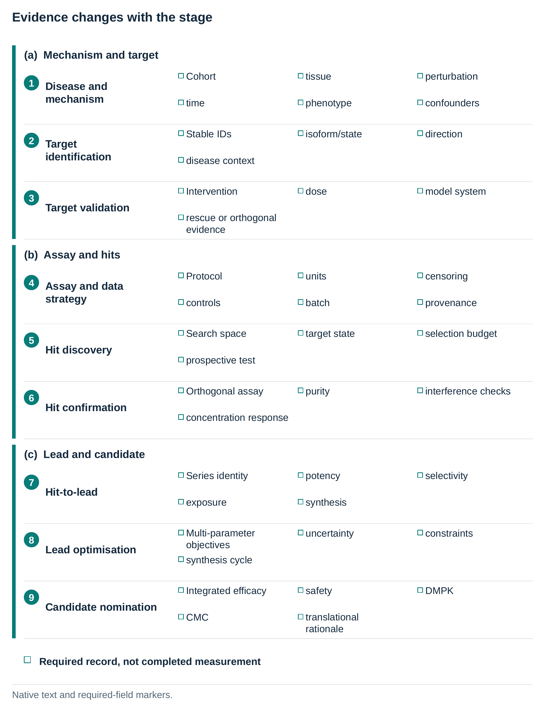
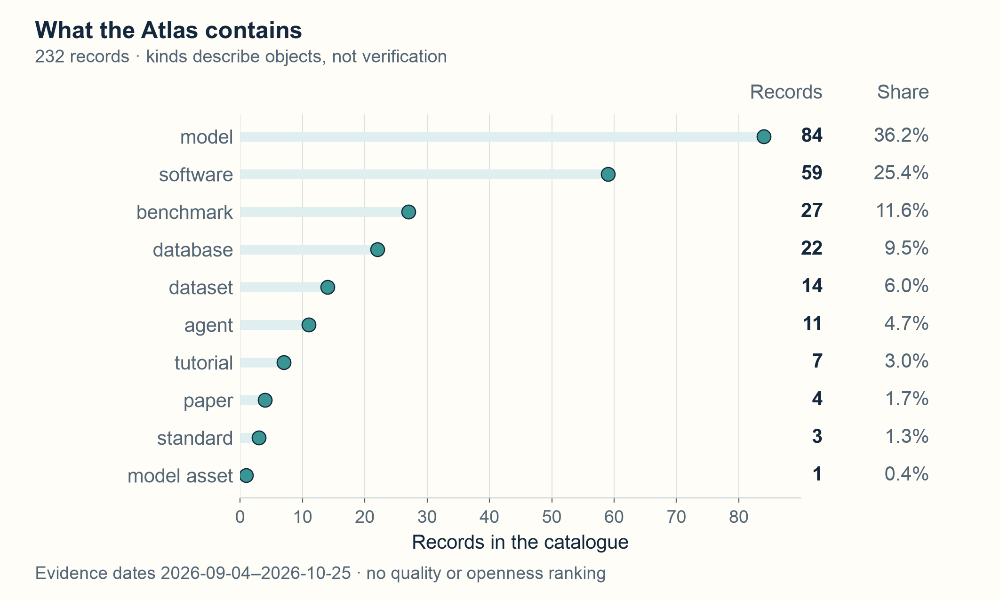
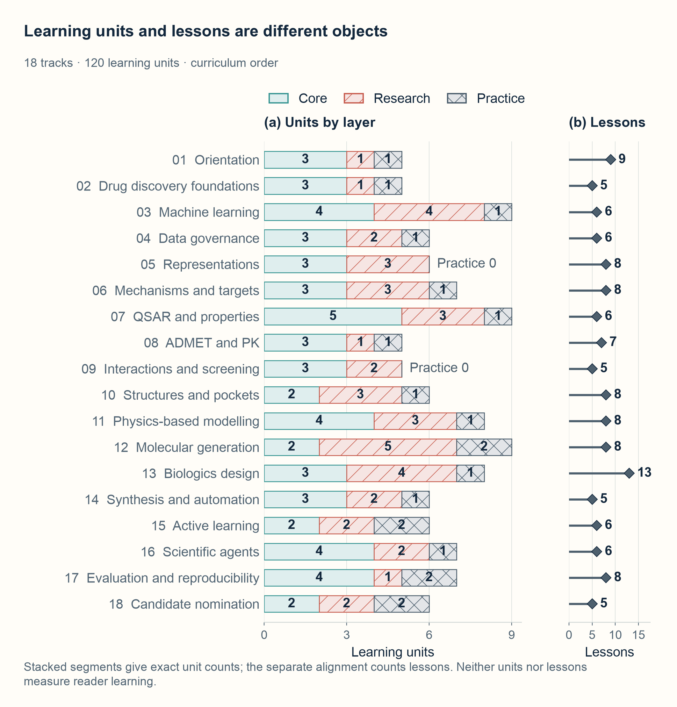
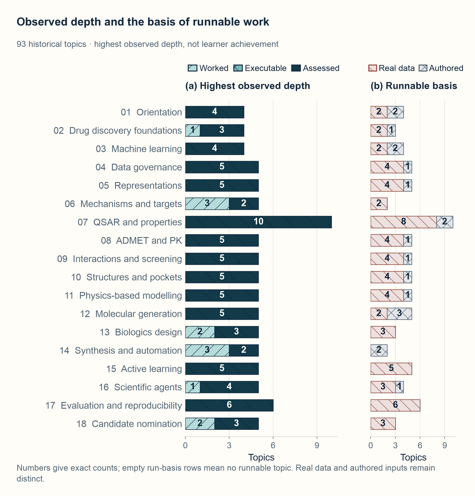

About this edition. This is the complete cumulative v0.2 report, extending the original volume with current laboratory evidence, comparison methods, frontier resources and linked scientific teaching views. All 20 report figures are embedded. Evidence dates and frozen results retain their original scope. The historical v0.1 PDF and the dated addendum remain separately accessible from the Report page.
1 Scope and boundary
This cumulative v0.2 edition retains the report’s scientific scope and expands its account of laboratory evidence, comparison methods and frontier resources. The figures use the current reviewed artwork and captions. Dates attached to source records and experiments remain their evidence dates, not the date of this PDF edition. Chapter 13 explains the linked teaching and visualization interfaces added to the platform. Software checks do not establish reader learning or comparative research utility.
1.1 Why this report exists
Artificial intelligence for drug discovery is not one task and it is not one model class. It is a chain of decisions that begins with biological mechanism and ends, within the boundary of this project, at preclinical candidate nomination. Along that chain, researchers select assays, reconcile chemical and biological identities, define prediction targets, choose experimental units, construct splits, estimate uncertainty, and decide which computational result deserves laboratory follow-up. A technically impressive model can be irrelevant if any preceding decision is wrong.
AIDD Commons therefore joins four artifacts. Learn supplies an 18-track graduate curriculum. Atlas records methods, models, datasets, benchmarks, software, standards, and tutorials with claim-level evidence. Labs make selected protocols executable and expose both successful and weak results. This Report explains the map, the open-development choices behind it, and the gaps that remain. These artifacts share identifiers and editorial rules so that a lesson can point to a resource record, a lab can implement a lesson’s protocol, and a correction can propagate across all three.
The intended readers are graduate students, AI and computational-biology researchers, and engineers. Some arrive with molecular biology but little machine learning, others can build models but have not worked with assays, medicinal chemistry, or biomolecular structures. The curriculum is a graph rather than a single linear course because these readers need different entry routes. Its common spine is scientific. It requires the reader to define the decision, the sample, the endpoint, the baseline, the validation unit, and the evidence before choosing architecture.
Drug research is unusually sensitive to category errors. A molecular target can mean a gene, transcript, protein isoform, protein state, complex, binding site, or pathway node. An “activity” value can refer to different assay formats, concentrations, censoring rules, and physical units. A random compound split can answer an interpolation question while being reported as if it tested a new chemical series. A predicted pose is not evidence of binding, and binding is not evidence of a useful cellular phenotype. These distinctions motivate the report’s emphasis on data contracts and stage-specific claims.
Machine learning is already used across discovery and development, but its appropriate role varies with data density, experimental noise, mechanistic knowledge, and the cost of a wrong decision (Vamathevan et al. 2019). Broad expectations should therefore be tempered by the actual decision context and prospective evidence (Bender and Cortés-Ciriano 2021). AIDD Commons teaches where a model can alter a decision, where it merely compresses existing evidence, and what experiment would falsify the resulting claim.
1.2 The four artifacts and how they couple
The four artifacts have distinct content and review responsibilities, linked by shared resource identifiers. Figure 1a distinguishes a lesson sequence, source registry, executable procedure and reviewed report. Figure 1b links them through shared identifiers. Its dashed correction routes express the editorial requirement that a source-backed correction should be reviewed in every artifact that repeats the claim. The diagram does not establish automatic propagation.
![Four artifacts, one system. (a) Learn provides ordered lessons, the Atlas stores source records, Labs implement executable procedures, and Report combines reviewed prose and figures. (b) Shared resource identifiers connect the four forms. Dashed correction routes denote the editorial rule that a source-backed correction should reach every affected surface. The figure reports no measured propagation result or reader outcome. The separate data and computation illustrations are AI-generated concepts rather than scientific image data.](../figures/schematic-01-artifacts.png)
The coupling is a property of the record system rather than of the file layout. A resource record holds a stable identifier, a name, a kind, an access level, a lifecycle status, seven openness dimensions with their evidence, a list of licences with their scopes, and a dated list of the pages that were opened. Everything else in the project is generated from that record or refers to it.
Table 1 sets out what each artifact holds and what it cannot establish on its own. The rightmost column matters most, because each artifact is regularly asked a question it was never designed to answer.
| Artifact | What it holds | The unit of its content | What it does not establish |
|---|---|---|---|
| Learn | Lessons, exercises, worked cases, and their prerequisites | One learning objective attached to one lesson | That a reader achieved the objective, or that a model performed well |
| Atlas | A reviewed record of a method, model, dataset, benchmark, standard, or tutorial | One resource with its own evidence | That the resource is open, maintained, or scientifically strong |
| Labs | A frozen protocol, a command, and a retained result artefact | One protocol with one decision unit and one metric | That the result transfers beyond the frozen split, or that the reading is a result |
| Report | The map, the argument, the open-development account, and the audit | One claim with its source | That the project is comprehensive, and that a superseding claim is established |
The last row is where the report’s own limits live, and Chapter 8 states them at length. The third row is where a laboratory result stops. A result opened once under a frozen protocol is evidence about that protocol and about the decision unit it named, and not about a different endpoint, a different chemical series, or a different programme.
1.3 Inclusion boundary
The central scope runs from disease mechanism and target discovery through candidate nomination:
disease definition, mechanism, target identification, and target validation; assay and data strategy, including entity resolution and provenance; hit discovery through experimental screening, virtual screening, repurposing, or design; hit confirmation and series formation; hit-to-lead and lead optimization across potency, selectivity, developability, ADMET, and exposure; modality-specific design for small molecules, proteins, peptides, antibodies, and nucleic acids; synthetic planning, experimental iteration, and design–make–test–analyse loops; and evidence integration for a candidate-nomination decision.
Clinical development, real-world evidence, manufacturing, health economics, and regulatory practice are adjacent but not treated as full professional curricula in v0.2. They appear where they constrain earlier decisions, such as translational endpoints, formulation feasibility, privacy, or the difference between retrospective model performance and clinical utility. Wet-lab protocols are described at the level required to interpret data and design computationally meaningful validation. This report is not a substitute for supervised laboratory, medicinal-chemistry, toxicology, clinical, biosafety, or regulatory training.
The boundary is drawn at the point where a computational claim becomes a human decision that carries cost. Everything upstream of that point can be taught with the machinery in this repository. Everything downstream requires a clinical, manufacturing, or regulatory apparatus that the project does not operate and does not simulate.
1.4 Four kinds of statement
Every important statement belongs to one of four classes, and Table 2 gives the test that keeps each honest. An observed source fact is directly established by an opened primary paper, official project page, repository file, licence, standard, dataset record, or measured artifact. A project decision is an AIDD Commons choice, such as its 18-track structure, seven-dimensional openness model, or a frozen lab split. An open question is material uncertainty the reviewed sources have not settled. Future work is an intended addition not yet implemented, measured, or reviewed.
This classification is more than editorial style. It prevents a project’s aspiration from being written as a result, a product page from being treated as a scientific validation, and an inaccessible asset from being labelled unavailable. It also makes corrections local, since new evidence can change one openness dimension without rewriting a resource’s identity or scientific purpose.
Figure 2 separates four kinds of authority. An observed source fact links a source to a supported claim in Figure 2a. A project decision records inputs, a choice and its rationale in Figure 2b. An open question retains unresolved evidence in Figure 2c, while future work marks an intended contribution before implementation or measurement in Figure 2d. Solid boundaries mark asserting classes and dashed boundaries mark unresolved or intended classes. These symbols do not place the classes on an evidence scale.
![Four classes of statement. The four quadrants make statement authority and status explicit. (a) An observed source fact requires an opened source and a sentence-level citation. (b) A project decision records a choice with its rationale and version. (c) An open question preserves missing, conflicting or inaccessible evidence as unverified. (d) Future work is planned before implementation, review or measurement. Solid and dashed boundaries distinguish asserting and unresolved or intended classes. These classes are not an evidence ranking. The source-record illustration is AI-generated and conceptual.](../figures/schematic-02-statement-classes.png)
| Class | What it asserts | What may not be inferred from it | Where it is recorded |
|---|---|---|---|
| Observed source fact | A page, file, licence, standard, or measurement says what it says | That the source is correct, complete, or current | The record’s evidence list, with a date and a URL |
| Project decision | The project chose this structure, split, threshold, or rule | That the choice is the only one, or that it is optimal | The protocol, the curriculum registry, or the audit report |
| Open question | Something material is unsettled by the sources reviewed | That the absence of evidence settles the question | The record’s caveats, or the report’s limitations |
| Future work | An addition is intended | That the addition exists, runs, or will work | The roadmap, and only the roadmap |
1.5 What v0.2 does and does not claim
This is a living technical report, not a systematic review. The source search is broad and dated, but v0.2 does not claim that every database, paper, course, company, or regional resource has been found. It is not a performance leaderboard. Numerical comparisons appear only when task, data, split, metric, and evaluation protocol are matched closely enough to make the comparison meaningful.
AIDD Commons is building toward the most comprehensive open AIDD learning system. It will not promote a superlative coverage claim until a reproducible comparison audit defines the comparison set, units of coverage, evidence threshold, and review date. The present claim is narrower. The project supplies a connected curriculum, an evidence-typed resource registry, a multidimensional openness model, executable honest-baseline labs, and an explicit contribution process in one system.
Chapters 10 and 11 report that audit and the retained automated readings that check it, and Chapter 12 reads the frontier families the curriculum now covers. The claim gate that governs the wording of the superlative is described in Chapter 8, where the report states the current status of both candidate claims and the single condition that keeps them from being established.
1.6 Reading the map
Readers should use the artifacts together. Begin with a pathway in
Learn, inspect candidate resources in Atlas, and run a lab only after
reading its data and evaluation contract. A resource’s
last_verified date describes the evidence review, not the
age of the science. Unverified is a maintained state, not a
negative judgement. Licence fields apply only to their declared asset
scope. A benchmark result has no portable meaning outside its
protocol.
The rest of this report follows the same logic as a drug-discovery project. Chapter 2 maps decisions from target to candidate. Chapter 3 positions the educational and infrastructure landscape. Chapter 4 asks what open development means when frontier models are only partly inspectable. Chapters 5 and 6 define data and evaluation discipline, and Chapter 6 states the project’s recorded coverage. Chapter 7 describes maintenance and governance. Chapter 8 states safety, licence and claim boundaries. Chapter 9 reports the retained laboratory evidence, Chapter 10 explains the comparison bounds, and Chapter 11 describes the automated second reading. Chapter 12 examines eleven frontier resource families, including their benchmark infrastructure. Chapter 13 explains how linked teaching views expose these scientific quantities and their limitations.
The report’s twenty figures retain source-linked plotting scripts or native schematic masters. Captions distinguish conceptual illustrations from measured evidence and retain the dates of the underlying records. The prose beside each figure explains the quantity or relationship a reader should inspect.
2 The target-to-candidate pipeline
2.1 A decision pipeline, not a software pipeline
Drug discovery is often drawn as a funnel. The picture is useful only if each narrowing step states what evidence entered, what was rejected, and what decision followed. Attrition is not automatically failure, because early rejection can be valuable when it prevents an expensive, weakly justified programme. Conversely, a large model that ranks compounds does not create value unless the ranking changes which compounds are made or tested and survives an independent experimental check.
The target landscape itself is heterogeneous. Drug targets span proteins, complexes, nucleic acids, and other biological entities, and the evidence connecting a target to an approved therapeutic is not equivalent to genetic or mechanistic evidence at the start of a new programme (Santos et al. 2017). The pipeline must therefore carry biological identity and causal assumptions forward, rather than reducing the problem to a protein sequence and a potency column.
Figure 3 presents nine numbered stages in three rows, each read from left to right. Each stage pairs its scientific object with a decision and a named frequent failure from the source table. Arrows indicate stage order, without implying a candidate count, success rate or biological causal relation.
![Target to candidate. Nine numbered stages follow the active v0.2 decision table in three horizontal rows, each read from left to right. Edge-wrapped connectors carry stage order from the last stage of one row to the first stage of the next. Every stage pairs a conceptual object with a decision and an explicitly labelled frequent failure. Arrows denote order, not causality or advancement success. Illustrations are AI-generated concepts rather than candidate counts, measured binding or biological effects. Complete evidence contracts and strong cheap baselines remain in the adjacent source table.](../figures/schematic-03-decision-pipeline.png)
The following map states the primary decision at each stage. “Cheap baseline” means the simplest serious comparator that can expose whether a more complex method has useful headroom.
| Stage | Decision | Minimum evidence contract | Strong cheap baseline | Frequent failure |
|---|---|---|---|---|
| Disease and mechanism | Which process is causally relevant? | Cohort, tissue, perturbation, time, phenotype, confounders | Replicated effect with covariate control | Correlation relabelled as mechanism |
| Target identification | Which entity is actionable? | Stable IDs, isoform/state, direction, disease context | Curated evidence aggregation | Gene/protein/pathway identities collapsed |
| Target validation | Does perturbing it change the phenotype? | Intervention, dose, model system, rescue or orthogonal evidence | Held-out perturbation or replicated assay | Same evidence reused for discovery and validation |
| Assay and data strategy | What quantity will guide optimisation? | Protocol, units, censoring, controls, batch, provenance | Transparent assay QC and replicate model | Incompatible endpoints pooled |
| Hit discovery | Which candidates deserve confirmation? | Search space, target state, selection budget, prospective test | Similarity, docking, or simple supervised ranker | Retrospective enrichment treated as prospective success |
| Hit confirmation | Is activity real and attributable? | Orthogonal assay, purity, interference checks, concentration response | Rule-based nuisance filters plus retest | Aggregation or assay artefact mistaken for binding |
| Hit-to-lead | Which series has tractable headroom? | Series identity, potency, selectivity, exposure, synthesis | Matched molecular-pair and medicinal-chemistry review | Optimising one endpoint while losing the programme |
| Lead optimisation | Which trade-off is worth making? | Multi-parameter objectives, uncertainty, constraints, synthesis cycle | Pareto view plus calibrated per-endpoint models | Scalar score hides unacceptable liabilities |
| Candidate nomination | Is the package coherent enough to advance? | Integrated efficacy, safety, DMPK, CMC, translational rationale | Predeclared evidence matrix | Model confidence substituted for missing experiments |
A target product profile is the formal statement of what a stage is optimising towards, and the systematic review of how it is used in academic research gives the field’s own account of the fields that must be filled before optimisation begins (Ibnidris et al. 2024). The independent unit at each stage is the field most often chosen silently, and it most often determines whether a result can be pooled.
Figure 4 presents a nine-row evidence ledger for the same stages. Each row pairs a stage identity with its minimum required records. Hollow squares mark required records rather than completed measurements. The ledger groups mechanism and target evidence in Figure 4a, assay and hit evidence in Figure 4b, and lead-to-candidate evidence in Figure 4c. The contracts differ by stage and must not be exchanged without changing the question being argued.

2.2 Disease mechanism and target evidence
Target discovery begins with a disease model, not a model architecture. The computational unit may be a patient, donor, tissue, cell state, perturbation, time point, or spatial niche. These are not interchangeable. Thousands of cells from one donor remain one independent donor for many clinical questions. A perturbation screen with many guide RNAs can support within-screen learning while offering little evidence for transfer to a different laboratory, background, or disease state.
The first data contract should name the biological entity and its stable identifier, the disease context and the intended direction of modulation, the independent sampling unit, the measurement and its uncertainty, the intervention or natural experiment supporting causality, and the external evidence that could refute the target hypothesis.
Knowledge graphs, language models, omics embeddings, and literature agents can organise evidence, but they inherit the omissions and causal ambiguity of their sources. A useful baseline is often a transparent evidence table that a domain expert can audit. A more complex method earns its place when it finds validated evidence that the table misses, improves prioritisation under a fixed validation budget, or changes a competent analyst’s conclusion.
2.3 Assays, endpoints, and entity resolution
Assay data become model-ready only after identity and measurement semantics are resolved. A canonical SMILES string is not a complete experimental identity, because stereochemistry, salt form, tautomer, protonation state, isotopic labelling, mixture composition, and batch can matter. Protein identity may require species, isoform, mutation, construct boundaries, post-translational state, cofactors, and complex partners. An assay endpoint needs protocol, units, relationship type, qualifiers, detection limits, and environmental conditions.
AIDD datasets frequently combine rows that look syntactically compatible but answer different questions. Binding affinity, biochemical inhibition, cell viability, and transcriptional response can all be called “activity”. Converting them to a single binary label may increase sample count while destroying interpretability. The defensible order is to retain raw provenance, harmonise only endpoints with an explicit conversion rule, show exclusion counts, and keep enough metadata to reconstruct the decision.
The exclusion counts are part of the result, not a footnote to it. A laboratory that admits 488 measurements from 13,305 reported rows records the 12,817 excluded rows and names the reason for each exclusion class, and a reader can then judge whether the admission rule was reasonable or merely convenient.
2.4 Hit discovery
Hit discovery can begin from physical screening, ligand-based retrieval, structure-based screening, fragment methods, phenotypic screening, repurposing, or generative design. Each route has a different claim. Ligand similarity asks whether neighbours of known actives are useful. Docking proposes geometries and scores under a structural model. A property predictor estimates a learned endpoint within a representation domain. A generator proposes candidates according to an objective and search procedure. None independently proves biochemical activity.
Retrospective virtual-screening results can be inflated by analogue leakage, decoy construction, target redundancy, and knowledge of the benchmark. Docking programs and scoring functions have long shown target-dependent behavior rather than a universal ordering (Warren et al. 2006). A serious evaluation therefore reports the candidate pool, allowed prior information, selection budget, train–test relationship, target state, and prospective confirmation rate. The cheapest useful comparator may be a fingerprint similarity search, a ligand-efficiency rule, a consensus of simple methods, or an experimentally motivated triage filter.
2.5 Hit-to-lead and lead optimisation
Once a chemical series exists, the question changes. The model must support local decisions under sparse, evolving, biased data. Measurements arrive in batches chosen by previous models and chemists, so the training distribution is endogenous. Assays drift, protocols change, and synthesis feasibility constrains which predictions can be tested. Random cross-validation over the accumulated table can be much easier than the next design cycle.
The optimisation target is also vector-valued. Potency, selectivity, solubility, permeability, metabolic stability, clearance, exposure, hERG activity, reactive motifs, synthetic tractability, novelty, and intellectual-property constraints may matter simultaneously. A weighted scalar score can conceal a fatal liability and lets weights be tuned after outcomes are visible. A more legible starting point is a Pareto view with endpoint-specific uncertainty, hard constraints declared in advance, and a record of why each compound was selected.
Active learning and Bayesian optimisation are valuable only when evaluated as policies. A retrospective point-prediction metric does not show that a policy finds better compounds with fewer experiments. The unit of evidence is a design cycle or a realistic replay with a locked acquisition budget. Selection bias, delayed outcomes, failed synthesis, and missing assays must remain visible. Chapter 9 reports a completed replay under exactly these conditions, including the case where the diversity policy lost to every random instance it was compared against.
2.6 Structural and simulation evidence
Structure prediction, co-folding, docking, molecular dynamics, free-energy calculations, quantum chemistry, and machine-learned potentials occupy different rungs of physical approximation. A predicted complex can propose contacts or a binding mode, and it does not establish thermodynamic affinity or cellular effect. Molecular dynamics samples a model under a force field and a finite trajectory. Alchemical calculations can estimate relative or absolute free energies, but their reliability depends on system preparation, sampling, force-field adequacy, mapping, and uncertainty analysis. Community best-practice guidance emphasises these protocol choices (Mey et al. 2020).
The curriculum teaches a ladder of physical and statistical claims, ordered by what each rung can support. A rung that supports a geometric hypothesis does not support an affinity, a score computed under a validated protocol does not transfer to another target, and a free-energy difference computed under a stated model does not establish the accuracy of the model that produced it.
The curriculum therefore teaches a hierarchy of claims. Geometry can support a structural hypothesis. A score can prioritise candidates under a validated protocol. A free-energy estimate can compare a defined perturbation with stated uncertainty. Experimental binding and functional assays are still required to establish the biological effect relevant to the programme.
2.7 Candidate nomination as evidence integration
Candidate nomination is not the point at which every model score is averaged. It is a structured argument that a particular molecule or modality has sufficient efficacy, selectivity, exposure, safety margin, manufacturability, and mechanistic rationale to justify the next investment. Missing evidence must remain missing. Correlated models do not create independent support, and repeated computational seeds do not replace independent biological units.
AIDD Commons represents candidate nomination as a capstone. Learners construct an evidence matrix, identify which claim each experiment supports, expose conflicts, and make a go/no-go recommendation with explicit uncertainty. The aim is not to imitate a company’s proprietary decision template. It is to train disciplined reasoning that remains valid when tools change.
3 The AIDD education and infrastructure landscape
3.1 Existing strengths
Open AIDD education already has strong components. TeachOpenCADD organises computer-aided drug-design topics as interactive notebooks using open packages and data, with material spanning acquisition, filtering, screening, structural analysis, machine learning, and uncertainty (Sydow et al. 2019). DeepChem supplies tutorials around a broad molecular-machine-learning library (DeepChem contributors, n.d.). Therapeutics Data Commons provides task-oriented access to datasets, splits, metrics, and benchmark infrastructure (Therapeutics Data Commons, n.d.). The European Advanced machine learning for Innovative Drug Discovery project and the O3DC Drug Discovery Benchmark Index offer additional training and resource-discovery routes (AIDD consortium, n.d.; Open Drug Discovery and Development Consortium, n.d.).
These projects are precedents and dependencies, not competitors to erase. AIDD Commons should link learners to the best existing lesson or tool when it fits. Its distinct job is to connect the full target-to-candidate decision chain, record asset-level openness and evidence, and make evaluation discipline a curriculum spine rather than a late appendix.
3.2 What the registry actually contains
The registry is the widest single artefact in the project, and its shape is worth stating before any claim about it. Figure 5 counts the records by kind. The counts are of records, and a count of records says nothing about whether a record has been verified, which is why the figure carries no status, access, or openness information.

A catalogue of that shape is what a project that teaches decisions, tools, and evidence would hold, and it is not what a project that taught only one layer would hold. It is also a catalogue in which most of the scientific weight sits in records that a reader cannot fully inspect, which is the subject of Chapter 4.
3.3 Gap model
The landscape is better understood by capabilities than by a single “coverage” score.
| Capability | Existing open ecosystem | AIDD Commons v0.2 role |
|---|---|---|
| Practical CADD notebooks | Strong examples in TeachOpenCADD and tool projects | Link, contextualise, and add protocol-aware bridges |
| Molecular ML software tutorials | Broad library-specific material | Teach task/data/split invariants across libraries |
| Dataset and benchmark access | Strong task hubs and individual benchmarks | Add claim-level provenance, applicability, and leakage checks |
| Biological mechanism to target | Distributed across biology and omics courses | Connect causal evidence to downstream design decisions |
| Biomolecular frontier models | Fast-moving papers and repositories | Maintain dated, multidimensional openness records |
| End-to-end curriculum graph | Partial routes across many providers | Publish 18 connected tracks and role-based pathways |
| Negative results and process knowledge | Inconsistent and often unpublished | Treat experiment reports and corrections as first-class artifacts |
| English–Chinese entry route | Fragmented | Canonical English plus semantically matched Chinese pathways |
This table is a project analysis, not a quantitative audit of every provider. Chapter 10 defines the comparison units, thresholds and reviewed surfaces used in the completed audit. Chapter 11 describes the automated second reading of this project’s material. Neither establishes an exhaustive census of providers.
3.4 The 18-track curriculum
The curriculum covers:
orientation, environments, pathways, and glossary; drug discovery, medicinal chemistry, structural biology, and experimental foundations; machine learning, geometric learning, probability, and scientific computing; data, licensing, standards, cleaning, and entity alignment; molecular, protein, complex, omics, and knowledge-graph representations; disease mechanism, target discovery, causal inference, and perturbational omics; QSAR, activity prediction, and molecular properties; ADMET, toxicity, DMPK, and PK/PD; drug–target interaction, affinity, virtual screening, and repurposing; structure prediction, pockets, and co-folding; docking, scoring, molecular dynamics, free energy, quantum chemistry, and ML potentials; small-molecule generation, search, and multi-objective optimisation; protein, peptide, antibody, nucleic-acid, and multimodal design; reaction prediction, retrosynthesis, synthesizability, and laboratory automation; active learning, Bayesian optimisation, and design–make–test–analyse loops; scientific language models, retrieval, tools, and agents; splits, benchmarks, uncertainty, out-of-distribution evaluation, leakage, and reproducibility; and candidate nomination, failure analysis, biosecurity, open science, and capstone work.
Figure 6a counts the learning units in each track by layer, while Figure 6b sets the lesson count beside it. A unit is a learning objective attached to a lesson, so the two counts differ, and neither says how long a track takes or whether a learner reaches its end.

Tracks are ordered but not isolated. Data and evaluation concepts recur because a learner needs them before any domain-specific result can be trusted. Biological foundations connect to target discovery, chemical foundations connect to property prediction and synthesis, and structural foundations connect to co-folding, docking, dynamics, and design. The final track requires learners to integrate these branches rather than treating completion of notebooks as competence.
The curriculum registry records 120 learning units across 127 lesson nodes, in 56 core, 44 research, and 20 practice layers. That is a count of what is registered, not a measure of quality.
The two sets of counts in Figure 6 describe different objects. Track 11 carries eight lesson nodes against eight learning units, while track 13 carries thirteen lesson nodes against eight units. The registered units define learning objectives and the lesson nodes define reading destinations. Their ratio is not a measure of teaching quality or study time.
3.5 Pathways by reader
Biology-first readers begin with orientation, chemical and structural foundations, scientific computing, and data contracts. They then follow disease mechanism and target discovery before choosing property, interaction, or modality-specific design tracks. Their common failure mode is accepting a computational representation without checking what biological distinctions it removes.
AI-first readers begin with the drug-discovery decision map, experimental foundations, data licensing and entity alignment, then representations and evaluation. They should encounter scaffold, target, time, and subject splits before complex architectures. Their common failure mode is treating rows as independent samples and metric gain as scientific utility.
Medicinal chemists and structural scientists can enter through the target-to-candidate map, data semantics, property and interaction prediction, structure and simulation, and multi-objective optimisation. Their common failure mode is using ML uncertainty as if it captured assay, domain, and model-form uncertainty together.
Engineers and research-software developers begin with environment and data contracts, then registry, reproducibility, model-serving, language-model tools, and safety. They should still complete one biological decision slice and one honest-baseline lab. Their common failure mode is building reliable infrastructure around an invalid scientific target.
The prerequisite relations the curriculum registry states are drawn in Chapter 5, where the ordering of a learner’s route becomes a question about data contracts.
3.6 Infrastructure as curriculum
The platform itself teaches. Each Atlas entry is one reviewable YAML record. Generated JSON and CSV expose deterministic transforms. Query parameters preserve Atlas filters. Learning progress remains local to the browser. Labs publish exact environments and commands. Public releases are built from an allowlist so internal operational material is not accidentally shipped.
These choices make hidden assumptions inspectable. A learner can see
why a resource is marked unverified, how a relation
resolves, and which source supports a licence. An engineer can reproduce
the catalog export without needing a database service. A reviewer can
distinguish canonical content from a generated surface. The architecture
is intentionally modest so that scientific curation, not platform
maintenance, remains the dominant work.
The depth distribution of the curriculum is not uniform, and Figure 13 in Chapter 6 is the figure a reader should use to decide where to look next.
The run basis distinguishes two kinds of runnable teaching task. Of the 81 runnable topics in the current 93-topic comparison projection, 62 use measured or computed records independent of the course and 19 use authored or synthetic inputs. Neither count measures learner success. Depth records what the retained readings observed in the material, and Chapter 6 separates these topic counts from the curriculum’s learning-unit and lesson counts.
4 The open-development frontier
4.1 From open artifacts to open process
An open repository is valuable, but it is not a complete account of how a frontier system was built. Open Athena describes process knowledge as the accumulated choices about data, experiments, optimisation, systems, evaluation, failed routes, and scale-up that rarely enter a final paper or model release (Hall 2026). Marin operationalises a version of this idea by making code, weights, data sources, experiments, failures, and tools visible as the work proceeds (Marin contributors 2026).
AIDD has the same structural problem, amplified by experimental and commercial constraints. A model may be accompanied by inference code and weights while its training data, negative experiments, selection logic, data cleaning, benchmark exclusions, or laboratory feedback remain private. A closed programme may disclose a scientific architecture but not its operational system. Academic work may publish code only after acceptance and omit failed screens or unstable recipes. Regulatory, patient, partner, and licence constraints can also make full disclosure impossible for legitimate reasons.
The goal is therefore not a binary moral label. It is a legible account of which assets and decisions are available, under what terms, and what remains unknown.
4.2 Seven-dimensional openness
AIDD Commons records seven dimensions separately:
Inference code, which asks whether a user can execute the released model or method; training code, which asks whether a user can train or fine-tune through the claimed procedure; weights, which asks whether the parameters are obtainable and under which terms; architecture, which asks whether the computational design is described sufficiently for scrutiny or implementation; data recipe, which asks whether sourcing, filtering, preprocessing, mixtures, and exclusions are documented; training data, which asks whether the actual training examples or a reconstructable lawful equivalent are available; and evaluation code, which asks whether the reported evaluation can be reproduced under the stated protocol.
Lifecycle and access are separate. A resource can be active and
closed, legacy and open, gated with source available, or public only
through an API, and each non-unverified value needs direct
evidence. The Open Source AI Definition provides a broader normative
account of freedoms and preferred forms for modification (Open Source Initiative
2024), and the Atlas dimensions serve a narrower empirical
purpose by showing which AIDD assets were actually evidenced in a dated
review.
Available is not synonymous with unrestricted, since
code, weights, data, and documentation can carry different licences.
Not available requires evidence that the asset is withheld
or absent within a defined scope, and when a reviewed source says
nothing the correct state is unverified.
Figure 7a compares the recorded asset states of the Img2Mol model and ADME-Fang-v1 dataset. Each of the seven dimensions retains its own state and redundant symbol. The matrix distinguishes available, not available, not applicable and unverified. Figure 7b keeps lifecycle and access on separate record axes. These are dated record examples rather than evidence of unrestricted reuse.
![Seven-dimensional openness. Two canonical source records give separate availability states for inference code, training code, weights, architecture, data recipe, training data and evaluation code. Redundant symbols and labels distinguish available, not available, not applicable and unverified. Actual access and lifecycle values are shown separately for each record, rather than inferred from these seven states. Both records were last verified 2026-10-21. Available does not establish unrestricted use, and unverified does not mean unavailable. The model and dataset illustrations are AI-generated concepts.](../figures/schematic-06-openness-dimensions.png)
Figure 8 gives the same seven dimensions across the current 232-record projection, grouped by kind. Each label reports available over applicable records, while a separate strip retains all four states across all records of that kind. Not-applicable records are excluded from the fraction only. Individual verification dates range from 4 September to 25 October 2026; the visual update does not constitute a new review of every record.
![Openness by record kind and by the seven openness dimensions, over 232 catalogue records. The source is the canonical Atlas resources.v1 projection; individual record verification dates range from 2026-09-04 to 2026-10-25. Each cell labels available records over applicable records. Its strip retains all records in four separate states: available, unverified, not available and not applicable; not-applicable records are excluded only from the displayed fraction. Openness is recorded per dimension and is never collapsed here into a single open or closed label.](../figures/plot-6-openness-matrix.png)
Unverified states describe a limit of the recorded evidence, not proof that an asset does not exist. Among the 84 model records, inference code is available for 78, training code for 51, weights for 50, architecture for 58, a data recipe for 29, training data for 30 and evaluation code for 21. Evaluation code is the least frequently established dimension in this model subset. The corresponding unverified counts are 5, 32, 31, 26, 55, 54 and 62. These counts describe the current projection, whose individual evidence dates are retained, rather than a new review of every repository.
| Kind | Records | Inference code | Training code | Weights | Architecture | Data recipe | Training data | Evaluation code |
|---|---|---|---|---|---|---|---|---|
| Model | 84 | 78 | 51 | 50 | 58 | 29 | 30 | 21 |
| Software | 59 | 59 | 14 | 8 | 17 | 4 | 4 | 16 |
| Benchmark | 27 | 12 | 0 | 1 | 0 | 14 | 7 | 13 |
| Database | 22 | 0 | 0 | 1 | 0 | 1 | 4 | 1 |
| Dataset | 14 | 0 | 0 | 0 | 0 | 4 | 3 | 2 |
| Agent | 11 | 9 | 2 | 2 | 6 | 3 | 2 | 2 |
| Tutorial | 7 | 2 | 1 | 0 | 0 | 0 | 0 | 1 |
| Paper | 4 | 0 | 0 | 0 | 0 | 1 | 1 | 1 |
| Standard | 3 | 0 | 0 | 0 | 0 | 0 | 0 | 0 |
| Model asset | 1 | 0 | 0 | 0 | 0 | 0 | 0 | 0 |
4.3 Access levels and licence layers
Openness is one axis. Access level and licence are two more, and they are recorded independently. Figure 9a counts records by access level, while Figure 9b counts them by their most restrictive stated licence layer.
![Access level and licence layer for the 232 catalogue records. The source is the canonical Atlas resources.v1 projection; individual record verification dates range from 2026-09-04 to 2026-10-25. 6 records carry no verified access level and 20 record no licence. The verified access levels are 1 open weights, 164 open source, 42 source available, 7 research only, 10 gated, 2 closed. By licence layer, 8 public domain dedication, 125 permissive software licence, 31 creative commons attribution, 24 copyleft, 7 creative commons non-commercial, 17 other stated terms. The 34 records with more than one licence are counted once, in their most restrictive stated layer.](../figures/plot-7-access-and-licence.png)
The current projection leaves six records without a verified access level and twenty without a recorded licence. These are separate gaps. An accessible repository may have no stated reuse terms, and a licence statement may cover only one asset of a resource. The counts in Table 4 use the same 232-record population as Figure 9.
| Access level | Records | Licence layer | Records |
|---|---|---|---|
| Open source | 164 | Permissive software licence | 125 |
| Source available | 42 | Copyleft | 24 |
| Research only | 7 | Creative Commons attribution | 31 |
| Gated | 10 | Creative Commons non-commercial | 7 |
| Open weights | 1 | Other stated terms | 17 |
| Closed | 2 | Public domain dedication | 8 |
| No verified access level | 6 | No licence recorded | 20 |
Thirty-four records carry more than one licence and are counted once in the most restrictive presentation layer they carry. The twenty records with no licence recorded are not records proven to have no licence. Their terms remain unverified. The layers summarize stated terms rather than establish a universal legal ordering. Asset scope and any conflicting statements must be read alongside the layer.
4.4 Co-folding as a frontier case
Biomolecular co-folding exposes why a binary open/closed label fails. AlphaFold established a major change in protein-structure prediction (Jumper et al. 2021), and AlphaFold 3 extended structure prediction across biomolecular interactions (Abramson et al. 2024). Subsequent systems span academic, industrial, open-source, gated, and preview release patterns. Their tasks are also not identical, since some focus on complex structure, some add affinity prediction (Passaro et al. 2025), and some position themselves as broader design engines (Chai Discovery et al. 2024).
The v0.1 Atlas reviewed the following official surfaces on 4 September 2026. The statements below describe evidenced availability, not scientific performance.
AlphaFold 3 inference pipeline (Google DeepMind
2026) provides public inference code under an Apache-2.0 code
licence, and its README states that the model parameters are obtained
separately under their own terms, so the record does not infer
training-code, training-data, or full-recipe availability from the
paper. Chai-1 (Chai Discovery 2026b) provides inference
material in the official chai-lab repository and describes
downloadable weights, which supports code-and-weight availability while
leaving a complete training recipe and training data unverified.
Chai-2 (Chai Discovery 2026a) describes
limited academic early access on its product page, which establishes
neither public code, weights, training data, nor asset licences, so
those dimensions remain unverified rather than being guessed from the
product identity. IsoDDE (Isomorphic Labs 2026) is described by a
company announcement as a proprietary AI and data engine across
discovery stages, with no asset-level evidence for code, weights,
recipes, or data, so the record states closed access at the described
service level and leaves the individual dimensions unverified.
Boltz-1 and Boltz-2 (Boltz contributors 2026) provide
inference code and weights under the terms recorded in the common
repository, and for the reviewed snapshot complete training and updated
evaluation materials were not established. OpenFold
(OpenFold contributors
2026) presents an open AlphaFold-style reproduction with code and
model assets, and the record supports public inference and weights
without upgrading every training-data and recipe dimension.
Protenix (Protenix contributors 2026) describes
both training and inference material and documents data-related
components, and the record preserves an asset-level licence caveat for
exact data subsets. OpenDDE Preview (Aureka Research 2026)
describes a preview all-atom engine with source and downloadable weights
and warns that interfaces and checkpoints may change, so the training
process and data dimensions remain unverified.
The scope of the licence that was read is the field a reader who intends to reuse an asset has to check, and it differs from the licence name in most of these records.
| Record | Access level | Dimensions the record establishes | Scope of the licence that was read |
|---|---|---|---|
| AlphaFold 3 inference pipeline | Source available | Inference code | Apache-2.0 over the code, not over the parameters |
| Chai-1 | Open source | Inference code, weights, architecture | Apache-2.0 over the source and the weights |
| Chai-2 | Gated | None | No asset licence established |
| IsoDDE | Closed | None | No asset licence established |
| Boltz-1 and Boltz-2 | Open source | Inference code, weights; training code for Boltz-1 | MIT over the source and the weights, not over the preprocessed structures |
| OpenFold | Open source | Inference code, weights | Apache-2.0 over the source, CC BY 4.0 over the parameters |
| Protenix | Open source | Inference code, training code, weights, architecture, data recipe, training data | Apache-2.0 over the source and the v1 parameters, proprietary terms over the v2 parameters |
| OpenDDE Preview | Open source | Inference code, weights | Apache-2.0 over the source, checkpoints under their own terms |
This snapshot deliberately avoids a performance ordering. Published numbers may use different datasets, dates, templates, inference budgets, ligand information, target classes, leakage controls, and post-processing. A scientifically meaningful comparison would require a matched evaluation suite, frozen inputs, common exclusions, identical structural templates and databases where possible, and uncertainty over independent complexes or targets. The registry has no field for such a comparison, because the registry records assets rather than performances.
4.5 What should be disclosed
For a computational AIDD result to become reusable process knowledge, a release should aim to disclose:
the decision and hypothesis rather than only the final model; exact data sources, versions, filtering, entity normalisation, and exclusions; split-generation code and leakage checks; baselines with recipe parity; training and inference commands, environments, seeds, and resource class; metric definitions and aggregation units; model-selection and stopping rules fixed before test access; failed experiments and why they were not advanced; calibration, domain-of-applicability, and prospective validation plans; and separate terms for code, weights, data, and derived artifacts.
Not every item can always be public. When patient privacy, commercial agreements, controlled access, safety, or licences constrain disclosure, a useful report can still describe the missing asset, its effect on reproducibility, and a public proxy that does not overstate equivalence.
Each item on that list unblocks a specific reader decision. A decision and hypothesis say what question the artefact answers, and data sources and exclusions say what it does not contain. Split code and leakage checks say whether the evaluation measures transfer or recall, and baselines with recipe parity say whether the method beats the cheapest serious alternative. Commands and seeds say whether the run can be repeated and what it costs. Selection rules fixed before test access say whether the result was chosen after seeing the answer, failed experiments say whether a route was already abandoned, and separate terms for code, weights, and data say whether the reader may use each asset for the intended purpose.
4.6 Process knowledge as a community artifact
The contribution system treats experiment reports, corrections, and RFCs as first-class work. A negative result is useful when the hypothesis, protocol, and failure are legible. A correction is useful when it propagates to every surface that repeated the claim. An RFC is useful when it preserves alternatives and dissent rather than presenting a decision as inevitable.
This changes the meaning of “tutorial”. The reader does not only reproduce a successful notebook. They see how the task was chosen, why a baseline was retained, what leakage check could fail, when the test set was opened, what the observed output was, and which conclusion the evidence does not support. Chapter 9 is written to that standard, and every laboratory it reports states what the run does not show.
5 Data, standards, tasks, and benchmarks
5.1 The data contract precedes the model
Every modeling task should begin with a compact contract:
| Field | Question |
|---|---|
| Decision | What action could change because of the output? |
| Entity | What exactly is one molecule, protein, complex, cell, patient, or reaction? |
| Input | Which measurements and metadata are available at prediction time? |
| Label | How was the target measured or constructed, with what units and censoring? |
| Independent unit | What unit supports uncertainty and generalisation claims? |
| Split | Which novelty or deployment boundary is simulated? |
| Baseline | What is the strongest simple method using the same allowed information? |
| Metric | Which error or utility corresponds to the decision? |
| Missingness | Why are values absent, and can that absence leak the answer? |
| Licence | Can the data be accessed, transformed, redistributed, and used as proposed? |
FAIR principles make data findability, accessibility, interoperability, and reusability explicit (Wilkinson et al. 2016). In AIDD, however, FAIR metadata alone does not guarantee fitness for a specific prediction. A dataset may be easy to download but merge incompatible assays, omit negative measurements, confound target and chemical series, or forbid redistribution of derived records.
The contract is a precondition for a fair comparison, and the last two fields are the ones a reader of a published result most often has to reconstruct for themselves. A missingness rule that can leak the answer is the standard way a curated dataset turns into a benchmark that measures curation rather than chemistry, and a licence that forbids redistribution of derived records can prevent a reader from checking the entity resolution that the contract declares.
5.2 Identity layers
Chemical identity should preserve the original record alongside standardised forms. Canonicalisation choices include charge, salts, solvents, tautomer handling, stereochemistry, isotopes, mixtures, and duplicate resolution. The identifier used for deduplication may differ from the one used for learning. A graph model cannot recover stereochemistry that preprocessing removed.
Biological identity needs equally careful layers, from gene identifiers through transcript and protein accessions, isoforms, species, mutations, constructs, post-translational modifications, complexes, conformational states, tissues, cell lines, donor context, and disease ontology. Mapping everything to a gene symbol can make joins convenient while silently merging different intervention targets.
Reaction identity includes reactants, reagents, solvents, catalysts, products, stoichiometry, temperature, time, yield definition, failed reactions, and provenance. The Open Reaction Database illustrates an open schema and repository for structured reaction data (Kearnes et al. 2021). Even with a schema, absence of unsuccessful reactions or procedure details can limit what a synthesis model learns.
Each identity layer has a specific loss that a canonicalisation can cause. A chemical record that keeps charge, salt, tautomer, stereochemistry, isotope, mixture, and batch can lose the distinction a flat representation no longer carries. A biological record that keeps gene, transcript, protein, isoform, species, construct, modification, complex, state, tissue, donor, and disease ontology can lose two intervention targets merged into one label. A reaction record that keeps reagents, catalysts, conditions, yield definition, failures, and provenance can lose the evidence that a synthesis model learns only where synthesis succeeded.
5.3 Task families
The Atlas groups resources by task while allowing multiple pipeline stages and modalities.
Property and activity prediction includes physicochemical properties, QSAR, bioactivity, solubility, permeability, metabolism, toxicity, and clearance. Evaluation must preserve units, censoring, assay identity, and chemical-series boundaries.
Interaction and structure includes drug–target interaction, affinity, pocket detection, docking, pose prediction, co-folding, dynamics, and free-energy estimation. Targets, structures, templates, ligand conformers, and structural databases can all leak related examples.
Generation and optimisation includes de novo molecule design, scaffold decoration, protein and peptide design, and multi-objective search. Validity and novelty are necessary diagnostics but not substitutes for property, synthesis, or experimental evaluation.
Synthesis and automation includes reaction prediction, retrosynthesis, condition recommendation, yield prediction, procedure extraction, robotics, and closed-loop optimisation. Evaluation should distinguish exact dataset reconstruction from practical route quality and execution success.
Biology and translation includes target prioritisation, perturbation response, omics integration, causal inference, and biomarker work. The independent unit often lies above the row or cell level, so donor, cohort, laboratory, and time separation are load-bearing.
Language models and agents include retrieval, literature synthesis, tool use, workflow planning, and autonomous experimentation. Their evaluation must separate factuality, tool execution, scientific decision quality, and end-to-end outcome. A fluent explanation is not evidence that the cited source was opened or that an action was correct.
Each family has an independent unit its evaluation usually rests on, and a leakage route that most often decides the result. Property prediction rests on the compound within a declared series and leaks through near-analogues across a scaffold split. Interaction and structure rests on the target or complex and leaks through templates and related targets. Generation and optimisation rests on the sampled candidate and leaks through oracle exploitation. Synthesis rests on the route or reaction and leaks through reagent overlap. Biology and translation rests on the donor, cohort, or laboratory and leaks through cell-level pooling of donor replicates. Language models and agents rests on the task and its grading rule and leaks through contamination and tool-state dependence.
5.4 Benchmark choice
Benchmarks are valuable because they stabilise data, splits, metrics, and baselines. MoleculeNet helped standardise evaluation across molecular machine-learning datasets (Wu et al. 2018), and TDC organises therapeutic tasks and benchmark interfaces (Therapeutics Data Commons, n.d.; Huang et al. 2021). But a benchmark’s protocol defines the claim. Replacing its split, removing difficult rows, changing target aggregation, or tuning on the test set creates a different task even when the dataset name is unchanged.
Before adopting a benchmark, ask:
Does its endpoint match the scientific decision; are train and test inputs available under the intended deployment conditions; is the independent unit represented by the split; are duplicates, close analogues, targets, structures, patients, and time handled appropriately; is the strongest reproducible baseline included with recipe parity; are missing labels and exclusions visible; and are data and code terms compatible with teaching and redistribution?
Ligand-based benchmarks can reward recognition of chemical similarity rather than generalisation to meaningfully new chemistry (Wallach and Heifets 2018). A time split can better imitate prospective use in some medicinal-chemistry settings, though it also changes assay mix and programme context (Sheridan 2013). Scaffold splits target a different notion of novelty and can be unstable for small datasets. No split is universally “realistic”, and it must be connected to a deployment claim.
The seventh question has an additional consequence for a teaching project. A benchmark whose terms forbid redistribution cannot be carried in a public release, which means a lab built on it cannot be handed to a reader as a runnable exercise. The three licensed clinical benchmark suites this project registers, ChemBench, LAB-Bench, and AI-Researcher, differ in exactly this respect, and Chapter 12 reports what each of their records establishes about reuse (Mirza et al. 2024; Laurent et al. 2024).
5.5 Baselines and representations
Cheap baselines are diagnostic instruments. For molecular regression they may include the training mean, physicochemical descriptors with linear or tree models, and circular fingerprints with regularised linear models or random forests. Extended-connectivity fingerprints encode local neighbourhoods and remain a strong reference representation (Rogers and Hahn 2010). For sequence tasks, k-mer, profile, or pretrained embedding baselines can expose whether a new architecture contributes beyond representation scale. For knowledge graphs, degree, frequency, and path heuristics can reveal shortcut structure. For omics, cell-type means and linear perturbation effects often deserve comparison before a large generative model.
The strongest cheap baseline is not necessarily the simplest individual model. If two allowed signals are complementary, a train-only blend or small ensemble is a legitimate baseline. Hyperparameter effort, preprocessing, external information, and inference budget should be comparable before an architectural gain is interpreted.
A learned encoder is judged on the same grounds as anything else, and the comparison that decides it is against a representation of comparable or greater capacity. The grid-transformer family made a graph attention mechanism a standard component rather than a distinguishing one (Ying et al. 2021), which is the reason the curriculum teaches representations and their baselines together rather than in sequence.
5.6 A minimum benchmark card
Every benchmark-facing lesson should publish:
task and intended use; source versions and acquisition dates; row and independent-unit counts before and after filtering; entity, endpoint, units, missingness, and censoring rules; split generator, grouping fields, and overlap audits; allowed external data and pretrained models; baseline recipes and model-selection budget; metric implementation and aggregation; uncertainty method and independent resampling unit; known leakage routes and domain limitations; and asset-specific licences and redistribution boundary.
This card is deliberately stricter than a table of dataset names. It lets a reader decide whether two reported numbers answer the same question.
5.7 Prerequisites as a data dependency
The curriculum records both lesson sequences and prerequisite relations. Figure 10 displays ten shared prerequisite lessons across six learning paths. Filled circles show the twenty-one stated prerequisite relations of the five specialist routes. Dashed squares identify eight shared lessons also listed in the core route. The core route states no prerequisites, so its inclusion marks represent a different relation.
![Prerequisites across six learning paths. The current curriculum YAML names 10 shared prerequisite lessons and 21 prerequisite relations across five specialist routes. Filled circles denote stated prerequisites. The separate core column uses dashed hollow squares for the 8 shared lessons also listed in the core route. Row badges count routes requiring each lesson; header counts give the listed lessons in each route. The core route states no prerequisites. These counts describe the map, not difficulty, coverage or observed learning. Route illustrations are AI-generated concepts.](../figures/schematic-05-prerequisite-graph.png)
Row badges count how many specialist routes require a lesson; column badges count the lessons listed in each route. The incidence marks make shared dependencies visible without implying difficulty, time to completion or observed learning.
6 Reproducibility, evaluation, and failure modes
6.1 Reproducibility is claim-specific
Reproducibility has several layers. A command may reproduce a file. A notebook may reproduce a metric. An independent implementation may reproduce a method. A new dataset or prospective experiment may reproduce a scientific conclusion. These are increasingly demanding claims and should not be collapsed into a single badge.
A computational artifact should expose the environment, exact command, deterministic or stochastic components, data acquisition, preprocessing, split, fitting scope, outputs, and expected checks. It should also show where determinism ends. GPU kernels, external APIs, mutable databases, stochastic conformer generation, and upstream model changes can create variation even when a random seed is fixed.
6.2 Frozen evaluation
The central rule is to freeze the protocol before looking at the held-out test result. The freeze includes task definition, eligible samples, labels, split, preprocessing, baseline recipes, hyperparameter selection, metrics, calibration, seed aggregation, and stopping rule. Training and validation data can be used as declared. The test set is opened once to estimate the frozen procedure’s performance.
This rule prevents several common forms of silent overfitting, including choosing a seed after test inspection, adding exclusions that improve the result, changing the primary metric, tuning conformal coverage, selecting the best checkpoint on test, and presenting the friendliest of several splits. If a post-test bug is found, the report should distinguish a protocol-invalidating error from a new scientific hypothesis and record why another evaluation is justified.
Figure 14 distinguishes the written protocol, freeze, training/validation pretests, one-time test opening and reviewed summary. A dashed return to development applies before test opening only. After opening, a bug is recorded as a protocol-invalidating error and result-driven retuning is prohibited. The diagram reports no measured value and does not assert that every pretest succeeds. It appears in Chapter 9 beside the retained protocols.
6.3 FreeSolv honest-baseline laboratory
The first executable lab uses FreeSolv version 0.52, a database of experimental and calculated hydration free energies (Mobley and Guthrie 2014; MobleyLab 2017). The lab is intentionally modest. Its purpose is to expose split effects, train-only fitting, baseline strength, and conformal interval behaviour on a CPU-feasible molecular regression task.
Project decision. The frozen dataset contains 642 parsed molecular records. Both random and Bemis–Murcko scaffold protocols use 514 training, 64 validation, and 64 test records. Scaffold grouping follows the molecular-framework concept introduced by Bemis and Murcko (Bemis and Murcko 1996). The baselines are the training mean, Morgan fingerprints with ridge regression, and Morgan fingerprints with a random forest. Conformal radii are fitted only on validation residuals. The primary split is scaffold, and MAE and RMSE are primary point metrics.
Observed result. After structural checks and validation runs passed, the held-out test evaluation was executed once. The following values are the frozen output, and they were not selected from repeated test runs.
| Split | Model | MAE (kcal/mol) | RMSE (kcal/mol) | Coverage | Mean interval width |
|---|---|---|---|---|---|
| Scaffold | Training mean | 2.591 | 3.288 | — | — |
| Scaffold | Morgan + ridge | 1.128 | 1.760 | 0.875 | 5.479 |
| Scaffold | Morgan + random forest | 1.257 | 2.038 | 0.906 | 6.013 |
| Random | Training mean | 2.767 | 3.450 | — | — |
| Random | Morgan + ridge | 1.019 | 1.351 | 0.734 | 3.165 |
| Random | Morgan + random forest | 1.368 | 1.940 | 0.875 | 5.158 |
The scaffold split has no overlap in its grouping keys across train, validation, and test. The random split has no molecule-identity overlap, but related scaffold groups can occur across partitions by design. The conformal radii were 2.739 kcal/mol for scaffold ridge, 3.007 for scaffold random forest, 1.583 for random ridge, and 2.579 for random forest.
These results support limited conclusions. Both fingerprint models improve point error over the training mean on both frozen splits. Ridge has lower MAE and RMSE than the random forest in this run. The random ridge interval coverage of 0.734 is below its nominal target in the finite held-out sample, and the lab reports it rather than recalibrating after test access. None of the results establishes state of the art, applicability to other endpoints, or prospective medicinal-chemistry utility.
The split comparison is the point of the exercise. The same model, the same features, and the same fitting code produce 1.128 kcal/mol on the scaffold split and 1.019 kcal/mol on the random split. A number quoted without its split does not identify an experiment. The figure that separates the point metrics from the interval metrics is in Chapter 9, where the same six rows are read alongside the other seven protocols.
6.4 Uncertainty and calibration
A point error averaged over molecules does not tell a chemist whether an individual prediction is reliable. Uncertainty methods should state what randomness or error source they represent. Deep ensembles, Bayesian approximations, quantile models, and conformal methods answer different questions and can all fail under distribution shift.
For split conformal regression, calibration residuals define an interval under exchangeability assumptions and a specified finite-sample rule. Coverage on a small test set can depart from the target. Reporting only mean width can also hide subgroup failure. A serious analysis inspects coverage and error by chemical region, target class, assay, or other deployment-relevant group without using the test findings to rewrite the frozen headline protocol.
The FreeSolv intervals make the point in miniature. The scaffold ridge reaches a coverage of 0.875 at a mean width of 5.479 kcal/mol, and the random ridge reaches 0.734 at a width of 3.165. The narrower interval is also the less accurate one, which is the ordinary behaviour of a method whose calibration was fitted on a validation distribution that does not match the test distribution.
6.5 Failure-mode taxonomy
Identity failure. Duplicate compounds, alternate salts, protein aliases, overlapping patients, or derived samples cross a split. The cheapest check compares canonical entity and grouping keys across partitions.
Endpoint failure. Labels with different physical meaning or units are pooled. The cheapest check stratifies provenance, units, assay type, and qualifier before modelling.
Temporal failure. Future information enters features, curation, or labels. The cheapest check reconstructs when every input became available and applies a time-aware split.
Representation shortcut. A model exploits target, scaffold, batch, source, or missingness patterns instead of the intended mechanism. The cheapest check is a simple shortcut baseline and counterfactual masking or grouping analysis.
Protocol mismatch. A claimed baseline uses different preprocessing, external data, tuning budget, or evaluation code. The cheapest check is recipe parity on the same implementation path.
Selection leakage. Test performance changes model choice, threshold, metric, or data cleaning. The cheapest check is a dated protocol and a single controlled evaluation entry point.
Uncertainty failure. Repeated seeds are treated as independent biological samples, or intervals are calibrated on test data. The cheapest check names the independent unit and traces every calibration input.
Reproducibility failure. A notebook works only with hidden files, a mutable URL, or a local environment. The cheapest check runs it in a clean CPU environment from documented acquisition instructions.
Scientific overreach. Retrospective prediction is presented as mechanism, binding, efficacy, or candidate quality. The cheapest check writes the next independent experiment that could falsify the claim.
Each failure mode has a cheapest check that detects it, and each check corresponds to an artefact in this repository that shows it ran. The identity check is the split membership files, and the decision-unit lab counts 71 salt-form measurements among 488 admitted points. The endpoint check is the admission funnel with its exclusion counts. The temporal check is a dated protocol and acquisition record, and the L1000 lab fixes one dose and one timepoint out of the series it reads. The shortcut check is a baseline that loses to its own control, and the FreeSolv forest loses to the ridge on the primary split. The parity check is one protocol naming every baseline, and the ChEMBL EGFR lab fits three baselines through one path. The selection check is a locked summary with a single open, and every reviewed summary in Chapter 9 states its one opening. The unit check is the correlated-frame standard errors, and the rMD17 page reports a block-averaged standard error 3.30 to 6.26 times the naive one. The overreach check is a stated scope in the summary, and every lab in Chapter 9 states what it does not show.
| Failure mode | Cheapest check |
|---|---|
| Identity failure | Compare grouping keys across partitions |
| Endpoint failure | Stratify provenance, units, and qualifiers |
| Temporal failure | Reconstruct when every input became available |
| Representation shortcut | A shortcut baseline and grouping analysis |
| Protocol mismatch | Recipe parity on one implementation path |
| Selection leakage | A dated protocol and one evaluation entry point |
| Uncertainty failure | Name the independent unit and trace every calibration input |
| Reproducibility failure | Run it in a clean environment from documented instructions |
| Scientific overreach | Write the next experiment that could falsify the claim |
6.6 Evaluation as a curriculum thread
Evaluation is Track 17, but it also appears in every vertical track. Property prediction teaches scaffold and time splits. Structure teaches template and sequence leakage. Omics teaches donor and perturbation units. Agents teach citation verification and tool outcomes. Generation teaches search budgets and oracle exploitation. Active learning teaches policy evaluation. Candidate nomination teaches evidence independence.
This repetition is deliberate. Learners should not reach the capstone with an evaluation vocabulary learned only after they have already internalised invalid examples.
6.7 What this project has measured about itself
The audit of Chapter 10 crosses 13 audited systems and 93 topic units, which materialises 1209 provider-topic cells, of which 591 direct observations and 618 explicit unknowns. The recorded coverage of this project is 93 explained, 93 worked, 81 executable, 62 executable on real data and 81 assessed topics. The audit leaves the claim status of both candidate superlatives at not established, and Chapter 11 reports the retained automated readings that checked these numbers.
Figure 11 draws the bounds across the thirteen audited systems. Its five aligned facets retain explained, worked, executable, executable on real data and assessed thresholds as separate quantities. AIDD Commons is the first row and its bounds are equal at every threshold because all 93 of its cells are direct observations, while every external row is an interval, because an unobserved cell contributes to an upper bound and nothing to a lower one.
![Coverage bounds for thirteen providers across five thresholds, each bound a lower and an upper count out of 93 topics. AIDD Commons is the first row and its bounds are equal at every threshold, 93 explained, 93 worked, 81 executable, 62 executable on real data and 81 assessed, because all 93 of its cells are direct observations. Every external row is an interval, because unobserved cells contribute to an upper bound and nothing to a lower one. The bounds are not confidence intervals and no probability attaches to them.](../figures/plot-2-coverage-bounds.png)
The interval shape of the external rows is the most useful thing in that figure. A provider whose upper bound is 92 and whose lower bound is 4 has not been shown to cover little, it has been shown to have been read at an index rather than at its content. The width of the interval measures the reading, not the provider.
Figure 12 sets the recorded depths against the retained automated readings of the same ninety-three topics. The upper panel reports agreement on 93 topics, with 0 deeper and 0 shallower. The lower panel compares all five thresholds. The two records give the same counts, including 81 executable, 62 executable on real data and 81 assessed. These readings include material authored by the reviewer and do not establish an independent replication. Chapter 11 describes the reading environment, rubric and remaining limits.
![The current self record against the retained automated readings of 93 topics in the comparison.v1 projection dated 2026-10-24. The compact upper strip gives the three outcome counts, and the lower markers pair the five threshold counts. The series began on 2026-09-11, and its description documents re-readings through 2026-10-24. These totals aggregate the latest retained topic scores rather than a single pass. The current aggregate agrees on 93 topics, reads 0 deeper and 0 shallower. At the thresholds the retained readings give 93 explained, 93 worked, 81 executable, 62 executable on real data and 81 assessed against the current record’s 93 explained, 93 worked, 81 executable, 62 executable on real data and 81 assessed. The reviewer also authored parts of the course, so this is not an independent replication or evidence of reader learning. The shallower count is constrained by the audit’s rule against inflated self scores.](../figures/plot-5-self-record-vs-reading.png)
Figure 13a distributes the same ninety-three topics by their highest observed depth within each track. Figure 13b separates the real-data and authored-input bases of each track’s runnable work. All eighteen tracks contain a runnable topic, and seventeen contain one on real data. Twelve topics remain at worked depth; their written treatment does not establish a runnable task for those topics.

7 Community development and governance
7.1 Contributions as typed scientific work
AIDD Commons offers six public contribution routes.
A source proposal adds or updates a resource with direct evidence and asset-level terms. A correction identifies an error and the evidence needed to repair every affected surface. A lesson proposal defines a question, prerequisites, learning outcomes, data contract, baseline, and failure modes. A lab proposal freezes an executable scientific protocol and expected artifact. An experiment report contributes a measured result, replication, negative result, or failure analysis. An RFC proposes a material change to scope, schema, curriculum, evaluation, licensing, governance, or safety policy.
Each route asks for evidence, licence and attribution, audience, scientific assumptions, and conflicts. The forms avoid collecting secrets or internal operational records. They are intake structures, not proof that a contribution is correct.
Each route produces a specific artefact when it succeeds. A source proposal produces one reviewed registry record with seven openness dimensions and a licence scope. A correction produces a dated correction that propagates to every affected surface. A lesson proposal produces one lesson reachable from the curriculum graph. A lab proposal produces one executable lab with a retained result. An experiment report produces one reviewed summary with its own stated limits. An RFC produces a recorded decision with its rationale and dissent.
7.2 Editorial review
Review follows the load-bearing claim. A catalog entry is checked against its direct sources and schema. A lesson is checked for conceptual accuracy, prerequisites, examples, and evidence scope. A lab is checked for data identity, split, metric, fit boundaries, expected failure tests, and clean execution. A Chinese page is compared semantically with the canonical English content. A public release is checked for useful contents and exclusion of private workflow material.
Agreement among reviewers is not independent evidence if they read
the same source. When a dispute concerns a number, split, licence, or
model behavior, review returns to the artifact that defines it.
Unsupported claims are narrowed or marked unverified, and
they are not decided by prestige or majority vote.
The review of a laboratory is the strictest of these, because a lab carries a claim that a number was obtained under a stated procedure. A lab review must establish which entity is one observation and how it was identified, which novelty boundary the partition simulates, which error in which unit is aggregated over which independent unit, which data were available to the fit and when, which checks the artefact is expected to fail, and whether the run reproduces from the published command.
7.3 Corrections and versions
The project is designed to change. Model availability, repository contents, access terms, and benchmark practice can all move after publication. Records carry fixed last-review dates. Corrections name the affected version and propagate through generated exports, Atlas pages, curriculum prose, and report updates.
Deprecation preserves useful history. A superseded model can remain linked to its successor. A withdrawn dataset can remain visible with its status and warning. Silent deletion would make old lessons and citations harder to understand. Material that cannot lawfully or safely remain is removed with the narrowest public explanation that does not repeat the problem.
A correction that reaches a lab result is the interesting case, because the result has already been published and a reader may have built on it. The correction route requires the evidence needed to repair every affected surface, and the protocol in this project requires that a protocol-invalidating error found after the test set was opened is reported as such rather than folded into a new hypothesis. Chapter 9 gives the labs whose committed summaries carry that kind of disclosure, and Chapter 11 gives the audit corrections that changed the coverage numbers of this project itself.
7.4 Decision rights and conflicts
Contributors propose, reviewers assess bounded evidence, maintainers merge and release, and stewards handle private conduct, security, and biosecurity reports. Material policy changes use RFCs. Routine decisions use documented review and rough consensus, but silence is not consent for a breaking change.
Employment, funding, authorship, investment, or close collaboration can create a conflict. A conflicted expert may provide technical evidence but should not be the sole approver of a disputed ranking, licence interpretation, correction, or enforcement action. Governance cannot make a factual claim true, and it can only decide what the project publishes given the evidence.
The retained automated readings described in Chapter 11 were designed against exactly this failure mode. The reviewer had also written parts of the course. These are second readings of the material rather than an independent replication.
7.5 English canonical content and Chinese access
English is canonical because it provides one claim-bearing source for a global technical audience. The Chinese edition mirrors the canonical lessons and lab guides and also supplies onboarding and pathway routes. Semantic parity requires quantities, negation, uncertainty, causal direction, licence scope and applicability conditions to survive translation. It does not require literal sentence order. Translation coverage does not establish independently measured comprehension in either language.
As the corpus expands, translation review should use paired sections and terminology notes. Machine translation can assist drafting but cannot approve scientific claims. A correction to canonical content must trigger review of every translated surface that depends on it.
7.6 Accessibility and durable delivery
An open tutorial is not open if it cannot be navigated with a keyboard, read at small viewport widths, distinguished in dark mode, or understood without motion. The site therefore treats visible focus, semantic headings, labelled controls, sufficient contrast, reduced motion, touch target size, and responsive tables as release conditions.
Durability also depends on formats. Canonical prose is plain Markdown, resource records are YAML, exports are JSON and CSV, labs are Python and Jupyter notebooks, and the report is editable Markdown and BibTeX with a PDF derivative. Static site generation avoids an account or application backend. These choices lower the barrier to mirroring, review, and migration.
7.7 Sustainable maintenance
Comprehensiveness is a maintenance problem, not a one-time scrape. The catalog needs scheduled link reports, but link availability is not evidence support. Curriculum coverage needs explicit denominators. Frontier records need dated re-review. Labs need dependency and data-version maintenance without changing frozen historical results. Community health needs correction response and credit for curation, translation, accessibility, and negative results.
The project should grow through evidence-qualified vertical slices rather than thousands of shallow links. A useful slice connects a decision map, core lesson, source records, lab or worked case, evaluation traps, openness analysis, and contribution route. Breadth then grows without sacrificing depth.
The maintenance task differs by artefact, and each one has a unit that shows the work was done. A registry record needs a new dated review and an updated record. A curriculum lesson needs a dated review. A laboratory needs a new environment record with the frozen result unchanged. A comparison record needs a new external-survey date. The audit report needs a new audit date and new bounds. A contribution needs a dated response that names the evidence. This report needs the numbers the audit changed.
8 Safety, licences, limitations, and roadmap
8.1 Scientific and biological safety
AIDD methods are dual-use. Property prediction, sequence design, synthesis planning, literature agents, laboratory automation, and optimisation can support beneficial research or lower barriers to harmful work. The educational response should be specific and proportionate. Removing all technical content would undermine legitimate training, and publishing operationally complete harmful workflows would be irresponsible.
Contributions require private escalation when they could materially improve the design, acquisition, optimisation, evasion, or deployment of a biological agent or harmful chemical. Risk increases when a contribution combines actionable targets, optimisation code, operational parameters, and validation guidance. High-level discussion, defensive evaluation, public benchmark analysis, and ordinary molecular modelling are not automatically restricted. Stewards should name the capability change and use the least restrictive adequate response, which may be narrowing scope, delaying details, obtaining expert review, applying access controls, or rejecting the contribution.
Patient and proprietary data create separate risks. Tutorials must not redistribute protected health information, confidential assay data, access tokens, or assets whose terms prohibit sharing. Synthetic examples should not be presented as clinical validation. Public database status does not remove the need to examine consent, governance, bias, and intended use.
8.2 Licence layers
Original AIDD Commons software is licensed under Apache-2.0. Original prose and figures are licensed under CC BY 4.0. Third-party assets retain their own terms. A project-wide licence cannot relicense an external paper figure, dataset, model parameter file, software dependency, trademark, or quoted passage.
Licence review therefore follows the asset. The SPDX licence list is the shared vocabulary the registry uses to record the terms of a third-party asset (Linux Foundation 2026).
- code licence for source and binaries;
- model terms for weights and hosted inference;
- data terms for access, training, transformation, derived artifacts, and redistribution;
- content terms for text, diagrams, screenshots, and educational adaptation;
- citation and notice requirements for scientific and community credit.
An official repository name is not licence evidence. A licence file may cover code but not weights or data downloaded by the code. “Research use” can restrict commercial or other activity and should not be collapsed into open source. When scope cannot be established from opened terms, the record remains unverified and links readers to the upstream source.
The registry projection contains six stated-licence presentation layers and a separate unverified group. Eight records fall under public domain dedication, 125 under permissive software licences, 31 under Creative Commons attribution, 24 under copyleft, seven under Creative Commons non-commercial terms and seventeen under other stated terms. Twenty records have no licence recorded. These counts use one record per most restrictive stated layer, as in Chapter 4.
| Layer | Scope to inspect | Records |
|---|---|---|
| Public domain dedication | The named asset and any rights outside the dedication | 8 |
| Permissive software licence | The code or other named asset, notice requirements and exclusions | 125 |
| Creative Commons attribution | The licensed content or data and attribution obligations | 31 |
| Copyleft | The named software or content and its redistribution conditions | 24 |
| Creative Commons non-commercial | The licensed asset and the non-commercial restriction | 7 |
| Other stated terms | Custom, academic or platform terms and any restrictions or conflicts | 17 |
| No licence recorded | Terms remain unverified for the recorded resource | 20 |
Thirty-four records carry more than one licence. A record can have all seven openness dimensions available while restricting commercial reuse. The access axis separately labels seven records research only. MACE illustrates why an acronym must be resolved from the actual terms. Its ASL checkpoints carry an academic non-commercial licence, so they belong under other stated terms rather than permissive software licences. The repository’s MIT licence does not replace those checkpoint terms.
8.3 Limitations of v0.2
The main limitation is coverage maturity. The source registry is broad but not a systematic census. Regional resources, non-English material, emerging companies, proprietary platforms, negative datasets, laboratory automation, clinical translation, and specialised modality communities are likely underrepresented, and resource availability can change after the fixed review date.
The curriculum structure is complete at the track level, with 120 registered learning units and 127 lesson nodes. It has written destinations throughout, while research depth and experimental coverage remain uneven. The retained 93-topic audit records 81 runnable topics, including 62 on real data. The English lessons and lab guides have Chinese mirrors, but this source coverage does not establish equal comprehension or learner outcomes in either edition.
The Atlas’s evidence model improves transparency but does not itself verify scientific quality. A directly supported repository claim can still describe a method with weak external validation, and a closed method may be scientifically strong but impossible to reproduce. Openness and performance are separate axes.
The FreeSolv lab demonstrates protocol discipline on a small molecular regression problem, and its results do not establish general behaviour for medicinal chemistry, large datasets, classification, three-dimensional structure, or distribution shifts. The ChEMBL EGFR lab shows that a representation that wins one frozen comparison can lose another by a wide margin.
The report does not provide an unmatched performance ranking for co-folding or other frontier systems. Such a ranking would require common inputs, databases, templates, inference budgets, evaluation code, exclusions, and independent-unit uncertainty. Public leaderboards that differ on these dimensions cannot be combined responsibly by copying headline numbers.
These limitations constrain distinct claims. The catalogue is not exhaustive, and registered lessons do not make every track equally deep. Translation and software acceptance do not establish reader learning. The evidence model records openness rather than scientific quality. The FreeSolv result does not establish general behaviour across drug-discovery tasks, and the ChEMBL EGFR comparisons do not support pooled representation superiority. No matched frontier ranking was produced. Although every track now contains runnable work, twelve audited topics still have no runnable task under the stated rubric.
8.4 Coverage audit required for a superlative claim
The completed comparison audit uses the following requirements before any promotion of a most-comprehensive claim. Its methods and current limits are reported in Chapter 10.
- define a public comparison set of active AIDD curricula, tutorial collections, benchmark hubs, and reference systems;
- define coverage units for pipeline decisions, scientific topics, resource types, evidence quality, executable labs, languages, accessibility, and maintenance;
- separate topic presence from substantive treatment and tested execution;
- archive direct evidence for each comparison entry and record inaccessible pages as unverified;
- publish the scoring rule before calculating results;
- invite corrections from compared projects;
- report both strengths and gaps rather than compressing everything into one score.
Both candidate claims remain not established. The numerical bound conditions are satisfied within the frozen comparison set, but promotion also requires a completed public correction window and review of submitted corrections. First public source availability on 25 October 2026 opened the 30-day window, which is scheduled to end on 24 November 2026. It remains open in the publication record checked on 6 November. Satisfying the numerical bound alone is insufficient.
Until that gate passes, the public wording remains “building the most comprehensive open AIDD learning system”. This is a constraint on the project’s own claims, and not a reduction in ambition.
8.5 Roadmap
Curriculum depth. Extend research depth and topic-specific execution within the existing track sequences, worked cases, assessments and capstones. Maintain the registered prerequisites and learning outcomes as lessons change. Prioritize tasks that remain below the executable threshold in the retained audit.
Evidence coverage. Broaden primary-source records across databases, standards, experimental methods, models, industrial platforms, regional education, and historical systems. Add re-review queues for volatile availability and licence claims. Build a public gap ledger rather than inferring absence from failed search.
Labs. Extend the existing CPU-first baselines and audits across QSAR, ADMET, drug–target interaction, docking, uncertainty and synthesis data. Add larger optional GPU labs only when a small protocol-valid route cannot teach the claim. Every lab will retain frozen data, split, metric, and selection rules.
Vertical slices. Develop source-to-decision slices for target discovery, perturbational omics, structure and co-folding, virtual screening, multi-objective molecular design, protein and antibody design, retrosynthesis, active learning, and scientific agents. Each slice will include a falsifier and an independent validation route.
Open development. Publish useful experiment reports, including failed replications and engineering limits. Link process decisions to resulting lessons without exporting private operational artifacts. Track changes in inference code, training code, weights, data recipes, training data, and evaluation code independently.
Community and language. Recruit disciplinary editors, educators, software maintainers, translators, accessibility reviewers, and early-career contributors. Extend Chinese semantic parity and evaluate additional language pathways when maintainers can sustain scientific review.
Evaluation and safety. Maintain and extend known-bad fixtures for leakage, unsupported claims, broken relations, inaccessible interfaces, and release contamination. Develop capability-aware safety review that protects legitimate education while preventing publication of materially harmful operational detail.
8.6 Closing position
The durable contribution of an AIDD tutorial is not a snapshot of fashionable models. It is a public method for learning, checking, and updating the field. That method begins with biological and chemical identity, follows data and decision contracts, demands strong baselines and matched evaluation, distinguishes openness by asset, preserves failures and corrections, and ends with an independently testable claim.
AIDD Commons v0.2 maintains and expands that structure. Its remaining work is visible by design. The project will earn comprehensiveness through maintained evidence, executable depth, and correction, and not through a headline alone.
9 The completed laboratory evidence
A result separates from an anecdote by three things. The protocol is frozen before the answer is looked at. The test set is opened once. The artefact is retained, dated, and readable by someone who was not present. Eight laboratory protocols in this repository meet that standard, and this chapter reports what each froze, what the run produced, and what the lab states it does not show.
The point of the chapter is not that the numbers are good. Several are not. The point is that each is a number with a stated procedure behind it, that a reader can check the procedure, and that the negative results are retained next to the positive ones rather than beside them.
9.1 The eight protocols and what they froze
Table 8 lists the eight protocols, the data they read, and the unit their conclusions rest on. The last column is the one that governs how far a result travels, and it is the column that most often turns out to be restrictive.
| Protocol | Source | Unit of inference |
|---|---|---|
| FreeSolv v0.52 honest baselines | FreeSolv v0.52, 642 parsed records | Molecule, within a scaffold-disjoint split |
| ChEMBL 37 EGFR representation | ChEMBL 37, two named assays | ChEMBL parent molecule, within a scaffold group |
| rMD17 system state | Revised MD17 version 4, two locked systems | Molecular system, not trajectory frame |
| Experiment pool budget | ChEMBL 37, the same two assays | Acquired compound count against a frozen budget |
| CYP assay system | ChEMBL 37, two whole targets | Parent molecule measured against both enzymes |
| AZ clearance system | One AstraZeneca ChEMBL deposition, three systems | Parent molecule measured in two assay systems |
| LINCS L1000 perturbation context | GEO series GSE70138, two cell lines | Compound, in one cell line against another |
| Affinity table independent unit | SKEMPI 2.0, a pinned mirror revision | Protein complex, not affinity row |
Every one of these protocols was frozen before its test set was opened, and every one states the exclusion rules and the seed that produced them. That shared property is what makes the differences between them comparable.
Three further laboratories carry committed summaries that are descriptive rather than predictive. The decision-unit lab recounts how many independent measurements a compound has, the assay-endpoint lab describes what six archived dose-response assays contain, and the Rosetta lab compares two readouts of the same genetic perturbation. They are reported below under the same discipline, because a recount and a description are still results.
Figure 14 presents the five-stage lifecycle shared by these protocols. A written protocol is frozen before structural checks and finite-output checks on training and validation data. Successful pretests lead to the one-time held-out test opening and reviewed summary. The dashed return to development stops before test opening. A later bug must be recorded as a protocol-invalidating error, and the opened test cannot become a source of result-driven retuning. The schematic carries no measured value.
![Frozen evaluation lifecycle. The written protocol is frozen before structural and finite-output pretests on training and validation data. A prominent boundary separates these pretests from the one-time held-out test opening and reviewed summary. The dashed development return applies only before test opening. A separate post-test error branch records a protocol-invalidating bug and prohibits result-driven retuning. The summary retains observed values and limitations. The figure asserts no measured output or universally successful pretest. The computation illustration is AI-generated and conceptual.](../figures/schematic-07-frozen-lifecycle.png)
What separates an artefact from a run is the reviewed summary, the last element in that sequence. Every protocol in this chapter produces one, and each omits the sample membership, the fit traces, and the run state, so that the public record carries the numbers and the decision and not the working files.
9.2 The FreeSolv honest baseline
Chapter 6 reports the FreeSolv result in the context of the split effect it exists to expose. The protocol froze a 642-record dataset into 514 training, 64 validation, and 64 test records under both a random and a scaffold partition, with the scaffold partition as the primary.
The scaffold split gives 1.128 kcal/mol MAE for the ridge against 2.591 for the training mean, and the random split gives 1.019 against 2.767. The random ridge interval reaches a coverage of 0.734 at a mean width of 3.165 kcal/mol, below its nominal target in a sample of 64.
What the lab states it does not show is that the random split is only an easier contrast, that scaffold grouping is an RDKit representation choice, and that the fixed features and untuned models are teaching controls rather than evidence of an optimal predictive model.
Figure 15 compares the same three baselines across both frozen splits. Figure 15a and 15b report mean absolute error and root mean squared error. Figure 15c and 15d report marginal interval coverage and mean width. The training-set mean appears first as the cheap baseline and has no defined interval.
![FreeSolv point and interval metrics for two fixed teaching baselines, on the predeclared scaffold split and the easier random split. The ridge reaches 1.13 kcal/mol mean absolute error on the scaffold split against 2.59 for the training-set mean, and 1.02 against 2.77 on the random split. On the scaffold split the intervals reach an empirical coverage of 0.875 for the ridge and 0.90625 for the forest, at mean widths of 5.48 and 6.01 kcal/mol. The coverage is marginal coverage and not conditional calibration, the nominal level of the intervals is not stated in the reviewed results, and these teaching baselines establish no state of the art.](../figures/plot-8-freesolv-split-calibration.png)
The split comparison is the point of the exercise, and the figure makes it visible. The same model, the same features, and the same fitting code produce 1.128 kcal/mol on the scaffold split and 1.019 kcal/mol on the random split. A number quoted without its split does not identify an experiment.
The lab’s own README makes one further point worth repeating. The v0.52 release metadata does not declare licence terms, and the current repository licence files are not version-bound evidence for that release, so the lab does not claim a historical-release licence for the data it read.
9.3 The ChEMBL 37 EGFR representation comparison
The database is attributed to Mendez et al. (Mendez et al. 2019), with the version fixed to the ChEMBL 37 release (EMBL-EBI 2026). This source attribution does not reopen the completed evaluation.
The protocol froze the admission rule, the scaffold split, the alpha grid, the selected alphas, and two separate evaluations. The entity is the ChEMBL parent molecule, and the rule requires the molecule identifier to equal the parent identifier, so a salt form is never admitted as a separate observation. The label is the pChEMBL value, aggregated by median across the admitted exact IC50 records in nanomolar units, and the split is by chirality-aware Bemis–Murcko scaffold.
What the run produced is more informative than a single number would be. Table 9 gives the three baselines on the two evaluations.
| Baseline | Primary MAE (pChEMBL) | Primary Spearman | Replication MAE (pChEMBL) | Replication Spearman |
|---|---|---|---|---|
| Training mean | 0.479 | Undefined, constant prediction | 0.898 | Undefined, constant prediction |
| Descriptor ridge | 0.469 | 0.129 | 0.579 | 0.113 |
| Morgan ridge | 0.418 | 0.505 | 3.132 | -0.041 |
Figure 16a pairs the mean absolute errors from the two evaluations, making the reversal of the ordering visible. Figure 16b shows that the Morgan ridge’s rank correlation changes sign between these comparisons.
![The same three baselines on the primary partition of 132 compounds and on the separate assay replication of 170 compounds. The Morgan ridge is the best of the three on the primary partition at 0.418 mean absolute error, while the descriptor ridge is the best on the replication at 0.579; the Morgan ridge reaches 3.132 there and its rank correlation falls from 0.505 to -0.041. The two evaluations are separate comparisons and success on one does not erase failure on the other, the acquisition lab had accessed labels shared with this evaluation before it ran, and no confidence intervals or p values are reported.](../figures/plot-9-representation-ranking-flips.png)
The Morgan ridge is the best of the three on the primary partition of 132 compounds at 0.418 pChEMBL, and the worst of the three on the separate assay replication of 170 compounds at 3.132, where its rank correlation falls from 0.505 to -0.041. A representation that wins one of these comparisons is not uniformly best, and the ordering is a property of the two comparisons rather than of the representation.
What the lab states it does not show is the part that constrains the use of the result. The acquisition lab had accessed labels shared with this evaluation before it ran, so this is not an entirely untouched independent confirmatory evaluation, and the frozen selections were not retuned after that exposure. The two evaluations are separate comparisons, and success on one does not erase failure on the other. The descriptor alpha reached the upper edge of the frozen grid, which means the search did not bracket the optimum and the reported figure understates what that baseline can do. No confidence intervals, p values, or pooled-assay superiority claims are reported.
9.4 The rMD17 system state
The protocol read the revised MD17 release, Figshare version 4, under a licence that permits redistribution, and selected four systems by declared role, with benzene and uracil as the locked systems and ethanol and malonaldehyde as the development systems. It selected 1000 frames per system by a stated rank expression and partitioned them into 600 training, 200 validation, and 200 evaluation frames. The features are element-pair distance bins from 0.0 to 10.0 Angstrom in 0.1 steps, and the protocol forbids the forces and old-energy arrays as features, so a model cannot read the answer from the trajectory.
What the run produced is in Table 10. Each model is fitted on its own system’s training frames.
| System | Control MAE (kcal/mol) | Ridge MAE (kcal/mol) | Control RMSE | Ridge RMSE | Target range |
|---|---|---|---|---|---|
| Benzene | 2.234 | 1.602 | 2.911 | 2.055 | 16.805 |
| Uracil | 3.720 | 3.124 | 4.784 | 4.087 | 33.140 |
| Median across systems | 2.977 | 2.363 | |||
| Range of per-system MAE | 1.486 | 1.522 |
What the lab states it does not show is that each model is fitted on its own system’s training frames, so this is not zero-shot transfer. The reporting units are two molecular systems and frames within each system are correlated, so these are within-system evaluations and not 400 independent observations. No frame-pooled metrics, confidence intervals, p values, force, or state-of-the-art claims are reported. The original evaluation did not retain per-frame Ridge predictions, so the post-run verification recomputed the training-mean scores and target ranges rather than the Ridge scores.
The correlated-frame problem is severe enough that a separate lab page was written for it. Figure 17a pairs the naive and block-averaged standard errors of a trajectory observable. Figure 17b shows their ratio for each molecule. Figure 17c retains the dependence of ethanol’s block-averaged estimate on the number of blocks.
![The uncertainty of a trajectory observable, from the rMD17 lab page. Ethanol has a naive standard error of 0.000087 Å against a block-averaged standard error of 0.000288 Å at 100 blocks and Malonaldehyde has a naive standard error of 0.000235 Å against a block-averaged standard error of 0.001472 Å at 100 blocks. The upper-right panel is the ratio between the two estimates, which is the number the page reports. The lower panel is ethanol’s block-averaged standard error against the block count, because a corrected estimate still carries a choice inside it. There is one trajectory per molecule and one level of theory, so nothing here speaks to replicate dependence or force-field sensitivity.](../figures/plot-11-correlated-frames-error-bars.png)
The naive standard error understates the uncertainty of the estimate by a factor of 3.30 for ethanol and 6.26 for malonaldehyde, and the lower panel shows that the corrected estimate still carries a choice inside it, since the block count changes the answer. One trajectory per molecule and one level of theory means nothing in the figure speaks to replicate dependence or force-field sensitivity.
Figure 18a shows the deviation of the cumulative radius-of-gyration mean from the full 100,000-frame mean across the chronological frame range. Figure 18b magnifies the later-frame deviations using the same retained values. It adds no simulation or smoothing.
![Signed deviations of the cumulative mean radius of gyration from the full 100,000-frame mean, from the rMD17 lab page. +0.00198 Å for ethanol and -0.02528 Å for malonaldehyde at 100 frames, +0.00254 Å for ethanol and -0.00743 Å for malonaldehyde at 1,000 frames and +0.00054 Å for ethanol and -0.00946 Å for malonaldehyde at 10,000 frames. The malonaldehyde curve is not monotone, being closer at a thousand frames than at ten thousand, and that is drawn as the data stands. One trajectory per molecule and one level of theory means nothing here speaks to replicate dependence or force-field sensitivity.](../figures/plot-12-trajectory-convergence.png)
The malonaldehyde curve is not monotone, being closer at a thousand frames than at ten thousand, and the figure draws that as the data stands. A reader who checked only the ten-thousand-frame point would conclude that more frames made the estimate worse, and the curve is the only thing that shows the conclusion is wrong. Ten percent of a trajectory is not automatically enough, and a fixed number of frames does not transfer to a different system.
9.5 The experiment pool budget
The protocol is a retrospective teaching specification, and it says so. It reuses the frozen ChEMBL EGFR endpoint, parent-record, median-aggregation, and filter contracts without relaxing any filter. It partitions the parent records into an initial set, a pool, and an evaluation set by whole scaffold groups, with target capacities of 10, 70, and 20 percent. The budget is four rounds of the floor of the pool size divided by twenty, and the realised fraction is reported rather than described as exactly 20 percent. The target universe is the original pool only, and recovery is the fraction of the top decile acquired at each checkpoint, integrated over the checkpoints and divided by the final acquired count.
The evaluation model is fixed at Ridge with alpha 1.0, and the protocol declares the tuning forbidden. At checkpoint zero the model is fitted on the initial parents only and the complete evaluation prediction vector is locked before any evaluation label is scored.
What the run produced is in Table 11. The two named policies and the five fixed random instances are all visible.
| Assay | Pool | Acquired | MaxMin recovery AUC | Ensemble-variance recovery AUC | Range over five random instances |
|---|---|---|---|---|---|
| CHEMBL5736995 | 631 | 124 | 0.0508 | 0.1133 | 0.0762 to 0.1016 |
| CHEMBL3705421 | 130 | 24 | 0.0000 | 0.1635 | 0.0096 to 0.1058 |
Figure 19a–c reports recovery, evaluation error and normalized recovery AUC for CHEMBL5736995. Figure 19d–f reports the same quantities for CHEMBL3705421. The recovery and error panels share the acquired-count checkpoints. The two named policies have distinct colours and markers, while the five random instances share a colour with separate markers. These are five fixed seeds of one policy rather than five different methods.
![Acquisition policies on two retrospective assay replays, on CHEMBL5736995, 124 compounds were acquired against a pool of 631, and the diversity policy reached normalized recovery AUC 0.0508 against 0.1133 for the ensemble-variance policy and on CHEMBL3705421, 24 compounds were acquired against a pool of 130, and the diversity policy reached normalized recovery AUC 0.0000 against 0.1635 for the ensemble-variance policy. The two named policies are drawn in colour and the five random policy instances in one colour with a distinct marker each, because they are five fixed seeds of one policy rather than five methods. Normalized recovery AUC is the trapezoidal integral over acquired-count checkpoints divided by the final acquired count. These are retrospective replays and not prospective experiments, the random seeds are not independent replicates, and no confidence intervals or p values are reported.](../figures/plot-10-acquisition-policy-recovery.png)
The diversity policy recovers less of the top decile than every one of the five random instances on the primary assay, and it recovers none of it on the second assay. That is a negative result and it is retained as such. The second assay has a pool of 130 parents in one scaffold group, which makes its diversity fraction uninformative, and the ensemble-variance policy wins it for a reason that has nothing to do with ensemble variance.
What the lab states it does not show is that these are two retrospective assay replays and not prospective experiments or discovery claims. The random seeds are fixed policy instances and not independent biological replicates. The Ridge alpha of 1.0 was informed by the earlier development work on the same contract, so this run is not an independent corroboration of that work, and the acquisition lab had accessed labels shared with the earlier evaluation before that evaluation ran, which this run inherits. No confidence intervals, p values, or pooled inferential comparisons are reported, and the protocol forbids a reader from concluding prospective synthesis, assay completion, hit confirmation, a new biological discovery, or population inference from random seeds.
9.6 The CYP assay system
The protocol reads two whole ChEMBL 37 targets rather than two named assays, because a single CYP target’s IC50 record set is itself spread across documents. It reuses the admission rule of the ChEMBL EGFR protocol unmodified, and defines a clean single pair as a parent with exactly one admitted activity per target.
What the run produced is in Table 12. The correlations are computed once over the full overlap and once over the clean single-pair subset, as a robustness check of each other, and no model of any kind is fitted anywhere in the protocol.
| Pair | What varies | Shared molecules | Pearson r | Spearman rho |
|---|---|---|---|---|
| CYP2D6 against CYP3A4, all pairs | The enzyme | 1195 | 0.299 | 0.298 |
| CYP2D6 against CYP3A4, clean pairs | The enzyme | 1015 | 0.299 | 0.304 |
| Microsome against rat hepatocyte | Species and matrix | 359 | 0.341 | 0.387 |
| Microsome against human hepatocyte | Matrix, species fixed at human | 96 | 0.408 | 0.486 |
| Human hepatocyte against rat hepatocyte | Species, matrix fixed at hepatocyte | 106 | 0.310 | 0.473 |
The two systems admit 5251 CYP3A4 parents and 2781 CYP2D6 parents, of which 1195 are measured against both.
What the lab states it does not show is that the protocol reads only in vitro IC50 inhibition records. It says nothing about transporters, enzyme induction, metabolite identification, or a clinical drug-drug-interaction outcome for any named drug pair.
Figure 20a compares Pearson and Spearman correlations across all five assay-system pairings. Figure 20b shows the six largest retained CYP disagreements. These selected extremes illustrate disagreement and do not estimate its population distribution.
![Agreement between CYP and clearance assay systems. CYP2D6 against CYP3A4, all pairs reaches a Pearson r of 0.2987 and a Spearman rho of 0.2981 over 1195 shared molecules, CYP2D6 against CYP3A4, clean pairs reaches a Pearson r of 0.2990 and a Spearman rho of 0.3038 over 1015 shared molecules, microsome against rat hepatocyte reaches a Pearson r of 0.3410 and a Spearman rho of 0.3868 over 359 shared molecules, microsome against human hepatocyte reaches a Pearson r of 0.4083 and a Spearman rho of 0.4864 over 96 shared molecules and human hepatocyte against rat hepatocyte reaches a Pearson r of 0.3095 and a Spearman rho of 0.4732 over 106 shared molecules. The six largest disagreements between the two CYP systems span 2.46 to 2.90 pChEMBL in both directions, with the first system higher on three molecules and the second on three. A correlation near 0.3 means a measurement in one system carries little information about the other, which is not the same as saying either system is wrong, and the six molecules are the extremes the review found rather than a sample of the distribution.](../figures/plot-13-two-assay-systems-disagree.png)
A correlation near 0.3 between two assay systems means that a measurement in one system carries little information about the measurement in the other, and that is not the same as saying either system is wrong. The six molecules drawn are the extremes the review found rather than a sample of the distribution, and they span 2.46 to 2.90 pChEMBL in both directions, with the first system higher on three and the second on three.
9.7 The AZ clearance system
The protocol reads one ChEMBL dataset deposition that three systems share, so there is no separate document condition in the overlap contract. It reuses the parent-structure and duplicate-median admission discipline of the two sibling protocols, adapted to a real difference in this endpoint. Intrinsic clearance reports an exact value with an empty relation field and uses the inequality only for a reading outside the assay’s quantifiable range, so the admission rule requires the relation to be absent rather than equal.
The three systems are human liver microsomes, rat hepatocytes, and human hepatocytes. They admit 743, 592, and 288 parents respectively, and no parent is a duplicate within a system.
What the run produced is the lower half of Table 12. Every pairwise correlation is between 0.31 and 0.49.
What the lab states it does not show is that the protocol reads only in vitro intrinsic-clearance records, one of several measures its topic names. It says nothing about absorption, volume of distribution, or oral bioavailability, and makes no causal or human-dose claim. An in vitro clearance disagreement between two assay systems is not a prospective interaction or dosing statement.
One methodological catch belongs here because it constrains what the numbers can be compared against. Microsome values are reported per gram of protein and hepatocyte values per million cells, so only the rank correlations compare validly across a matrix change, and a raw fold-change between them does not.
9.8 The LINCS L1000 perturbation context
The protocol reads GEO series GSE70138 and fixes exactly two cell lines, one dose, and one timepoint out of the several thousand the same series contains, and it uses only the 978 directly measured landmark genes. Each admitted profile has the median profile of every vehicle-control well on that exact plate subtracted before aggregation, and an instance whose plate has no vehicle-control well is excluded rather than paired with a control from a different plate.
What the run produced is a two-stage result that is the most instructive in this chapter. The cell lines admit 1725 compounds from 37495 input rows for MCF7, and 1724 from 34112 for PC3, of which 1721 are shared. Computed once on raw Level 2 values with no baseline correction, the matched compound pairs show a median Spearman rho of 0.79 against a mismatched-pair null median of 0.70. After vehicle-control subtraction the matched median is 0.175 against a null median of 0.034, a difference a two-sided Mann-Whitney U test finds significant at p = 7.9 × 10−82.
Table 13 gives the two stages of the comparison, and the second row is the one a reader should carry.
| Comparison | Matched median rho | Mismatched null median rho | Matched fraction positive | Null fraction positive |
|---|---|---|---|---|
| Raw Level 2 values, no baseline correction | 0.79 | 0.70 | not reported | not reported |
| After per-plate vehicle-control subtraction | 0.175 | 0.034 | 0.795 | 0.603 |
What the lab states it does not show is that the protocol reads only two real cell lines, one dose, and one timepoint out of the several thousand the same GEO series contains, and only the 978 directly measured landmark genes. It makes no claim that a cross-cell-line signature correlation predicts any clinical outcome.
The second row of Table 13 is the finding a reader should take away, and it was caught before publication rather than after. On raw values, a compound’s profile in one cell line correlates with an unrelated compound’s profile in the other cell line almost as well as with its own, because both cell lines’ raw profiles share enough baseline structure. A method that skipped the baseline correction would have reported a strong agreement signal and been measuring the cell lines rather than the compound.
The comparison still has a residue that the numbers state plainly. About one-fifth of the real compounds show a negative cross-cell-line correlation even after baseline correction, so cell-line context measurably changes and, for a real minority of compounds, reverses the direction of a compound’s transcriptional response.
9.9 The affinity table independent unit
The protocol reads a pinned mirror of the SKEMPI 2.0 table (Jankauskaitė et al. 2019), and its declared question is how many independent measurements a compound actually has and which rows have to be set aside before that number means anything. The entity is one upstream record, the independent unit is the complex, and the analysis subset is the antibody-antigen class with both parsed affinities finite and positive. The split sorts distinct complexes, shuffles with the fixed seed, and reserves the first ceiling of 20 percent of complexes for test.
What the run produced is in Table 14.
| Comparator | Test-row MAE (log10 M) | Test-complex mean MAE (log10 M) | Character |
|---|---|---|---|
| Training-group median only | 1.427 | 1.684 | Uses no observed mutant value |
| Observed mutant as the wild-type prediction | 1.132 | 1.560 | An observed comparator, not a prospective predictor |
The holdout is 9 test complexes holding 33 test rows, drawn from 35 training complexes and 686 training rows. The table holds 2486 complete pairs across 348 complexes, of which 4669 rows carry no class and 5739 rows are fragmented records. A diagnostic row split leaks 142 of 144 test rows into training, which is the measurement the protocol was designed to make visible.
What the lab states it does not show is that the primary-value rule deliberately does not reconstruct overflow fragments, so a partial mirror record is not evidence that an upstream measurement was never made. The split demonstrates the independent-unit issue for this table, and two simple comparators do not establish model superiority. No reader outcomes have been observed.
9.10 The three descriptive laboratories
Three laboratories in this repository produce a description rather than a prediction, and they are reported here because a reader who saw only the predictive laboratories would form a wrong account of what a laboratory is in this project.
The decision-unit lab asks, for a declared set of real compounds, how many independent measurements each compound actually has, and which rows have to be set aside before that number means anything. The protocol draws no split and holds nothing out, because it fits no model. The cohort is read end to end and every count is published. The grouping unit is the triple of assay, document, and endpoint type, so two admitted point measurements sharing all three are the same measurement.
What the run produced is an admission funnel over 13305 reported rows across ten parent molecules. Of those, 1004 are admitted in total, 516 as bounds and 488 as point measurements, and the point measurements carry 484 independent experiments, of which 71 are salt-form and 417 parent-form measurements. The largest gap between a reported row count and an independent measurement count is valproic acid, with 6294 reported rows and 27 independent measurements, a ratio of 233 rows per measurement. The exclusion is where the number comes from, and the largest classes are 6363 rows excluded as non-standard activity and 5517 excluded as outside the endpoint family.
What the lab states it does not show is that the cohort begins with fifteen declared ChEMBL identifiers, including salt formulations, which resolve to ten parent units chosen to exercise the counting rules, and not a random sample of ChEMBL. No uncertainty interval is reported, and none should be, because every number is an exact count of a fully enumerated declared set rather than an estimate of a population quantity.
The assay-endpoint lab asks what six archived PubChem BioAssay dose-response assays actually contain, and which conclusions each assay’s own control record licenses. The protocol makes one deterministic descriptive pass over the cached archive, audits the control record of each assay, and recomputes or refits the concentration-response curve. It fits no predictive model, and its evaluation is none, because there is no prediction and no metric that compares a model against a baseline.
What the run produced is a mix of 1529 readouts across five endpoint types and 1257 relations, split into 644 development and 613 held-out compounds by a seeded rule that groups on the PubChem compound identifier. The relation mix is 832 equalities, 406 inequalities, 4 strict inequalities, and 15 unstated. The curve check recomputes each archived curve under a fixed tolerance of 5 points and compares the recomputed endpoint against the value the archive itself recorded, and the fraction of held-out curves within tolerance runs from 0.62 for assay 519 to 0.94 for assay 1277.
What the lab states it does not show is that six assays are not a sample of the archive, and nothing in them estimates how relation qualifiers, confidence scores, or control regimes are distributed across PubChem BioAssay as a whole. A reader who changes the admission rule gets a different cohort. A missing control record is reported as a fact about the archive rather than as evidence that the experiment was performed without controls, and the curve check is a check on the archive’s internal consistency rather than an assessment of the underlying experiment.
The Rosetta lab asks how strongly two readouts of the same genetic perturbation agree, and how much of that agreement survives when the plate and batch structure of the measurement is accounted for. The source is one batch of one study, one cell line, one timepoint, with 291 imaging features and 978 transcriptome features over 528 admitted perturbations.
What the run produced is a large apparent agreement and a much smaller robust one. With the split drawn at random across the batch, the cross-modal feature correlation is 0.826. When the batch is blocked out of the training side it falls to 0.633, and when a single plate is blocked out it falls to 0.652 for imaging and 0.669 for transcriptome. A size-matched random fold of the same training and test sizes recovers 0.788 to 0.809, which is the measurement that identifies what the blocking removed. The survival ratio, the share of the above-null agreement that remains, is 0.765 for the batch-blocked evaluation and 0.788 and 0.810 for the two plate-blocked evaluations.
The model-free check reaches the same conclusion without a model. The neighbourhood concordance of the two feature spaces is 0.745 against a permuted null of 0.0007, so the two readouts genuinely describe the same perturbations, and the variance attribution shows the imaging batch accounts for 0.4 percent of the imaging feature variance and the imaging plate for 2.7 percent. The agreement is real and is mostly not caused by the plate structure.
What the lab states it does not show is that this is one batch of one study, one cell line, one timepoint, one set of engineered edits, and that the study’s other four batches, the other 46 gallery studies, and the JUMP pilot are outside the protocol. The agreement is measured between two readouts of the same perturbation, and it is not evidence about mechanism, about the gene, about a target hypothesis, or about any clinical outcome. The blocked evaluations hold out structure inside one published experiment, and a batch or plate held out here is still one the laboratory has seen before, so this is not a deployment setting.
9.11 What the laboratory evidence establishes
Table 15 gathers the eight protocols with the single most important limitation each one states.
| Laboratory | The limit its own summary states |
|---|---|
| FreeSolv | The random split is an easier contrast, and the fixed models are teaching controls rather than an optimal predictive model |
| ChEMBL 37 EGFR | The acquisition lab had accessed shared labels before the evaluation ran, and the two comparisons are separate |
| rMD17 system state | Two within-system evaluations, not zero-shot transfer, and frames within a system are correlated |
| Experiment pool budget | Retrospective replay, fixed seeds rather than replicates, and an inherited alpha |
| CYP assay system | In vitro inhibition only, with no clinical interaction claim |
| AZ clearance system | One of several clearance measures, with no absorption, distribution, or bioavailability claim |
| LINCS L1000 | Two cell lines, one dose, one timepoint, and no clinical or in vivo claim |
| Affinity table | A demonstration of the independent-unit issue, and two comparators rather than a model ranking |
Three conclusions follow, and none of them is a performance claim. First, the strongest result in the set is the ChEMBL EGFR reversal, because a ranking that flips between two frozen comparisons is evidence about the comparison rather than about the representation. Second, the most useful number in the set is the L1000 raw-correlation figure of 0.79 against a null of 0.70, because it shows how a method can measure the wrong thing convincingly. Third, every one of the eight is bounded by a stated unit of inference, and a reader who takes any of these numbers outside its unit is not extending the result but replacing it.
Each laboratory also states its limits in the artefact itself rather than in a separate note, which is what allows an independent reviewer to check the claim without asking the author what the author meant. That property is what the audit of Chapter 10 and the reading of Chapter 11 both depend on.
10 How the comparison audit works
10.1 What the audit is for
The audit exists to make the project’s own coverage claim falsifiable by someone who does not trust the project. It does that by fixing a comparison set, a unit of coverage, a threshold, an evidence rule, and a date before any number is computed, and then by publishing the resulting bounds whether or not they favour the project.
That design has a property that a coverage score does not. A score compresses a set of measurements into one number, and a reader cannot tell whether the number came from a wide measurement or a narrow one. The audit keeps the measurement wide. Every provider is crossed with every topic, and the result for each provider is a pair of numbers, a lower bound and an upper bound, at each of five thresholds.
10.2 The frozen comparison set
The audit contains thirteen providers, eighteen tracks, and ninety-three topics. The thirteen providers fall into four classes.
The class matters because the four kinds of system are not measured by the same yardstick, and the audit does not pretend they are. A curriculum that covers a topic as a worked case and a tutorial collection that covers it as a notebook script are different deliverables, and a benchmark hub that lists a task is different again from a system that teaches it. The class is recorded on every row of the matrix, and a reader who wants to compare a curriculum against another curriculum and a tutorial collection against another tutorial collection can do that from the same table.
The 1209 provider-topic cells are the product of 13 providers times 93 topic units. Of those, 591 direct observations and 618 explicit unknowns.
10.3 The lower and upper bound method
Every provider is crossed with every taxonomy topic, and every cell takes one of three states. A direct observation takes precedence over the record’s explicit default of unverified. An unverified cell contributes zero to the lower bound and one to the upper bound. An absent cell contributes zero to both. A directly observed cell whose depth reaches the threshold counts in both bounds, and a cell that was observed but sits below the threshold counts in neither, and it lowers that provider’s ceiling.
The asymmetry is the whole method, and it is worth stating in plain terms. Not knowing whether a provider covers a topic is not the same as knowing that it does not, so an unknown cell is allowed to raise a ceiling but never to lower a floor. A cell that was opened and found to be below the threshold is a measurement, and it lowers the ceiling, because a measurement below the threshold is a fact about the provider at the date of the survey.
That second rule is the one that a reader should check, because it is the rule that determines whether the comparison favours the project or the comparator. The audit records that comparator ceilings at the explained threshold were lowered by 364 cells that the project reviewed and found below that threshold, across twelve providers. Had none of them been reviewed, the strongest external upper bound would have been 93 rather than 92, and the project’s own lower bound of 93 would not have exceeded it. The margin in the most comprehensive claim is a margin produced by this project’s own survey work, and the audit says so in the same paragraph that reports the margin.
10.4 The run basis distinction
Every executable or assessed cell also records what its runnable task rests on. A real-data basis means measured or computed records that exist independently of the course, or a genuine simulation, docking, or structure-prediction run on them. An authored basis means hand-written or synthetic inputs, including real molecules with invented values. An unverified basis means the record does not establish which.
The executable-on-real-data threshold counts only real-data cells. An unverified basis adds to the upper bound alone. This is what keeps a hand-written exercise from counting as a measurement, and it is why the reported coverage carries two executable numbers rather than one.
External cells were classified only from what each cell’s own note, reviewed scope, and evidence titles state. No provider was re-read in order to classify it. That is a deliberate limitation with two consequences. The external classification is a reading of the recorded evidence rather than a fresh survey, so it is dated differently from this project’s own row. And the external rows therefore carry an interval, because a classification made from a note rather than from the material itself is a weaker observation than a direct one.
10.5 The scoring rule published before the results
The audit publishes the scoring rule before it computes the results. The rule is the bound method above, the threshold set of explained, worked, executable, executable-on-real-data, and assessed, the run-basis definition, and the treatment of unverified and absent cells. It is stated in the audit document and implemented in one place in the exporter, and the exporter refuses to run if a record violates it.
The status field of the two candidate claims is a hardcoded literal in the exporter rather than a computed value. It cannot become established because the numbers moved. A human has to change the code. That is a safeguard and it is deliberate.
10.6 What the audit found
Table 16 gives the coverage bounds for all thirteen providers at the five thresholds. Every external row is an interval, and the intervals are wide because the external survey was a survey of surfaces at a stated depth.
| Provider | Direct cells | Absent | Unknown | Explained | Worked | Executable | On real data | Assessed |
|---|---|---|---|---|---|---|---|---|
| AI-Guided Inquiry Learning for Computational Drug Discovery | 13 | 0 | 80 | 4-84 | 3-83 | 3-83 | 3-83 | 0-80 |
| AIDD Commons | 93 | 0 | 0 | 93 | 93 | 81 | 62 | 81 |
| Build AI Drug Discovery Pipelines | 93 | 42 | 0 | 43 | 42 | 34 | 15-34 | 0 |
| ChEMBL Quick Tour | 74 | 70 | 19 | 4-23 | 0-19 | 0-19 | 0-19 | 0-19 |
| DeepChem Step-by-Step Tutorials | 14 | 5 | 79 | 9-88 | 8-87 | 6-85 | 1-85 | 0-79 |
| Advanced Machine Learning for Innovative Drug Discovery | 20 | 0 | 73 | 0-73 | 0-73 | 0-73 | 0-73 | 0-73 |
| Machine Learning for Drug Discovery and Development | 18 | 0 | 75 | 0-75 | 0-75 | 0-75 | 0-75 | 0-75 |
| O3DC Drug Discovery Benchmark Index | 7 | 0 | 86 | 6-92 | 5-91 | 0-86 | 0-86 | 0-86 |
| OpenMM Cookbook and Tutorials | 79 | 75 | 14 | 3-17 | 2-16 | 2-16 | 2-16 | 0-14 |
| Practical Cheminformatics Tutorials | 23 | 15 | 70 | 8-78 | 8-78 | 6-76 | 3-76 | 0-70 |
| RDKit Cookbook | 49 | 45 | 44 | 3-47 | 3-47 | 0-44 | 0-44 | 0-44 |
| TeachOpenCADD | 93 | 41 | 0 | 46 | 40 | 32 | 23-32 | 23 |
| Therapeutics Data Commons | 15 | 0 | 78 | 8-86 | 7-85 | 6-84 | 5-84 | 0-78 |
TeachOpenCADD and Build AI Drug Discovery Pipelines each have 93 direct cells and no unknown cells. TeachOpenCADD has the strongest external lower bounds at explained, executable, executable-on-real-data and assessed depth: 46, 32, 23 and 23. Build AI Drug Discovery Pipelines has the strongest external worked lower bound, 42, and its 42 recorded absences lower its explained bound to 43. A provider surveyed at index level, such as a benchmark hub, retains a wide interval that describes the survey’s limits.
The two claims the audit was built to test remain not established. The most-comprehensive bound condition compares an explained lower bound of 93 with the strongest external upper bound of 92. The most-detailed condition compares a worked lower bound of 93 with the strongest external upper bound of 91 and requires at least twelve self-audit tracks with executable or assessed coverage. The current projection records eighteen such tracks, seventeen with real-data work. The public correction window is open rather than completed, so neither claim can be promoted.
The audit also records what it did not find. Zero confirmed depth gaps have direct AIDD Commons evidence, and zero topics require self-audit before gap classification. Zero topics are below the executable threshold here while an external provider is already runnable there. Runnable coverage on real data is 62 topics here, against a largest external lower bound of 23 and a largest external upper bound of 86, so the unresolved cells still decide that comparison.
10.7 The limits of the audit
The twelve external systems are a frozen first comparison set and not an exhaustive multilingual census. The 618 unknown cells cannot support an absence claim or a promoted comparative claim. The executable threshold describes a directly visible runnable task surface, and it does not mean the audit reran every external notebook. External provider records have not been re-surveyed since 11 September 2026, so an external bound is a statement about what was known at that date and not about what a provider holds now. A comparator cell changes only through a source-backed correction.
The three v0.2b depth candidates were selected after passing all seven frozen eligibility criteria. Their selection fields are historical snapshots rather than current run status, and the selection-time text is preserved as history so that a reader can see what was believed at the time of selection and what was later delivered.
11 What the retained automated readings found
11.1 The reading and its sandbox
The automated second reading checks whether the material supports the project’s recorded teaching depth. It does not establish independence from the authorship process. The recorded reviewer was OpenAI Codex CLI 0.154.0 with gpt-6-astra at maximum reasoning effort. Claude sessions assigned the self-scores, but Codex sessions also authored parts of the course.
The series began on 11 September 2026. The current aggregate, dated 24 October 2026, retains the latest reading for each of the same 93 topics, including later scoped re-readings of changed material. It is not a single reading pass or an independent replication.
Readings used read-only sandboxes containing the relevant published lessons, lab guides, Atlas pages, laboratory material, resource records, taxonomy and curriculum map. Capability tags and the comparison records, audit report, roadmap, self-scores and Chinese edition were excluded. Web access was not used. Later batches included the source data needed by the topics they re-read. The first three batches completed 149 shell commands without paths outside their sandboxes. These observations describe the reading environment rather than a fresh full-course execution.
11.2 The rubric
The rubric asks the reviewer to choose the deepest state the material demonstrably reaches for the topic as the taxonomy describes it, reading the passage rather than a title or a link, and to choose the shallower state when the evidence is ambiguous. The executable state needs a runnable task in the repository about the topic with declared inputs and outputs. The assessed state needs an exercise with a worked answer, a rubric, or a verification target about the topic, and does not require anything runnable. Every executable or assessed reading states whether its runnable task rests on real data, on authored inputs, or on nothing runnable.
Because the audit scores depth ordinally, a recorded assessed state also claims executable. A reading of assessed with nothing runnable is therefore compared here as worked. That convention is what makes the comparison meaningful, and it is also the reason one topic’s record did not move.
11.3 The result
Table 17 gives the two records at the five thresholds.
| Threshold | Recorded here | Retained readings | Difference |
|---|---|---|---|
| explained | 93 | 93 | 0 |
| worked | 93 | 93 | 0 |
| executable | 81 | 81 | 0 |
| executable on real data | 62 | 62 | 0 |
| assessed | 81 | 81 | 0 |
The retained aggregate agrees with the record on all 93 topics, with no deeper or shallower score. The validator rejects a self-score above its retained reading. The current distribution is twelve worked topics and 81 assessed topics. Of the latter, 62 have a real-data run basis and nineteen an authored-input basis. Equality therefore describes agreement under this rubric, not proof that a learner can execute or understand the material.
Twelve topics have no runnable task for the topic as defined. They remain worked under the audit’s ordinal convention even when their written material includes an assessment. A new lesson, a neighbouring lab or a higher numeric score does not by itself satisfy the topic-specific execution requirement.
11.4 The rule about the self record
The self record may not claim more depth than the retained reading supports. An assessed reading with no runnable task is compared as worked, because the audit’s ordinal assessed state also claims execution. The ceiling is applied topic by topic rather than inferred from the course’s overall laboratory count.
A higher score requires corresponding teaching content and a reading that verifies it. Changing the record alone adds no evidence. When appropriate material already exists, a fresh scoped reading can establish its depth. When the material does not address the topic’s own task, a neighbouring laboratory cannot supply the missing execution evidence.
11.5 The topic the discipline refused to raise
Biologic functional validation remains worked in the current projection. Its written lesson distinguishes a measurement, a response and a clinical outcome and supplies a worked case and an independent exercise. The associated laboratory classifies general assay records rather than testing the topic’s functional-validation question. The retained reading therefore assigns no runnable basis for this topic.
Biologic construct definition illustrates why historical decisions must be dated. A reading on 22 October found no runnable task and left that topic at worked depth. Later material audited committed UniProt and DailyMed passages, and the retained reading on 24 October verified a real-data task on six protein therapeutics with an interpretation exercise and answer. The current construct-definition record is assessed on real data. That update does not resolve the separate functional-validation gap.
11.6 What the reading is not
The reading is an automated second reading of teaching depth. It is not reader evidence, not a human expert review, and not a measure of learning. The first three batches had no Python environment, so a note that local execution failed because RDKit was unavailable describes the sandbox. The first batches also excluded the scripts directory, so a note that an advertised checker script is missing describes the sandbox rather than the repository, where the script is published.
The reading also does not check the science. It checks whether the material reaches the depth the taxonomy describes. A lesson can reach assessed depth and still teach something the literature has moved past, and a laboratory can be protocol-valid and still answer a question no one has asked. The audit and the reading together bound what this project can say about its own coverage. They say nothing about whether the coverage is the coverage a reader needs.
12 The current frontier method families
This chapter reads eleven frontier resource families, including benchmark infrastructure. Each reading identifies the scientific task, the registry’s openness evidence, asset-specific licence scope and the evidence boundary. These are readings of dated source records. They do not run checkpoints, download training corpora or independently measure system performance.
12.1 Machine-learned interatomic potentials
A classical force field fixes the functional form of an energy surface and fits its parameters. A machine-learned interatomic potential lets the model learn the surface from data, and that substitution is the whole idea and the whole difficulty. A force field states in its own documentation which terms it contains and what was fitted to what, while a learned surface inherits the reach of whatever corpus produced it, and that corpus is often the part a reader cannot inspect.
The six released code bases the registry records for this family are NequIP, MACE, CHGNet, MatterSim, SevenNet, and TorchANI. NequIP is a code base for E(3)-equivariant machine-learned interatomic potentials that also distributes pretrained foundation potentials through its own model host (Batzner et al. 2022). MACE is a code base for machine-learned potentials with higher-order equivariant message passing, publishing pretrained potentials for materials and molecules, with academic non-commercial terms on a subset of checkpoints (Batatia et al. 2023). CHGNet is a pretrained graph neural network potential for charge-informed atomistic modelling, trained on Materials Project relaxation trajectories. MatterSim is a deep learning atomistic model used as a machine-learning force field across the periodic table. SevenNet is a graph neural network interatomic potential package with pretrained universal potentials and a fine-tuning interface. TorchANI is a neural network potential library that registers built-in datasets.
Table 18 gives the openness of the six records. All establish inference code, training code and architecture, while their evidence for weights, data and evaluation differs.
| Record | Inference code | Training code | Weights | Architecture | Data recipe | Training data | Evaluation code |
|---|---|---|---|---|---|---|---|
| NequIP | available | available | available | available | unverified | unverified | unverified |
| MACE | available | available | available | available | available | available | available |
| CHGNet | available | available | unverified | available | available | available | unverified |
| MatterSim | available | available | available | available | unverified | unverified | unverified |
| SevenNet | available | available | unverified | available | unverified | unverified | unverified |
| TorchANI | available | available | available | available | unverified | unverified | unverified |
All six records establish available inference and training code, but availability does not demonstrate successful execution or training reproduction. The data recipe is available for MACE and CHGNet and unverified for the other four. Training data are available for two records and evaluation code for one. These fields retain the scope of the individual record rather than a claim that every checkpoint in a family can be retrained.
The licences differ by asset. NequIP carries MIT over the source and CC BY 4.0 over the listed pretrained potentials. MACE carries MIT over its source and some checkpoints, while a subset of checkpoints carries the academic non-commercial ASL licence. MatterSim’s source and its two recorded released checkpoints are MIT; separate hosted versions are outside that grant. CHGNet, SevenNet and TorchANI carry MIT or BSD over their source. The CHGNet and SevenNet records leave checkpoint terms unverified, whereas TorchANI’s recorded ANI-2x weight has a separate MIT host tag. Code terms cannot be extended to other assets from the repository name alone.
12.2 Single-cell foundation models and virtual cells
This family divides into two task contracts, and the gap between them is the teaching content. The first takes one cell as input and returns a vector, so a cell from a tissue, an assay, or a species the corpus never contained can still be placed in the same latent space, because the encoder needs no label and no fine-tuning. The second takes an intervention as input and returns a counterfactual, so a baseline cell state, a declared perturbation, and a context produce a predicted post-perturbation profile. A representation of a cell is not a prediction about an intervention.
The eight records are scGPT, scFoundation, CellFM, UCE, GEARS, CPA, PertFormer, and a zero-shot evaluation study. The scGPT repository describes a generative pretrained transformer for single-cell multi-omics that embeds gene expression into cell and gene representations (Cui et al. 2024). The scFoundation repository describes an asymmetric transformer pretrained on more than 50 million human single-cell transcriptomes. CellFM is a RetNet-based foundation model pretrained on transcriptomics of about 100 million human cells. UCE is a self-supervised model that maps single-cell transcriptomes into one shared biological latent space. GEARS is a graph-based deep learning model that predicts the transcriptional response to single and multi-gene perturbations by combining a gene embedding with a knowledge graph. CPA factorises single-cell transcriptional responses into basal, drug, and perturbation effects. PertFormer is a multimodal transformer with 3 billion parameters that predicts the effects of genetic, transcriptional, and sequence perturbations. The zero-shot study trains nothing.
Table 19 gives the openness of the eight records, and the weights column is the one that decides most downstream choices.
| Record | Inference code | Training code | Weights | Architecture | Data recipe | Training data | Evaluation code |
|---|---|---|---|---|---|---|---|
| scGPT | available | unverified | available | available | available | available | unverified |
| scFoundation | available | unverified | available | available | available | unverified | unverified |
| CellFM | available | available | available | available | available | available | unverified |
| UCE | available | unverified | available | available | unverified | unverified | unverified |
| GEARS | available | unverified | unverified | available | unverified | available | available |
| CPA | available | unverified | available | available | unverified | unverified | unverified |
| PertFormer | available | unverified | available | available | unverified | unverified | unverified |
| Zero-shot evaluation | available | not applicable | not applicable | not applicable | unverified | not applicable | available |
The licences attached to those weights range from a source-code-only MIT to a non-commercial, no-derivatives grant that forbids sharing an adapted model. A reader who plans to fine-tune, redistribute, or serve any of these models has to read the licence of the asset and not of the repository. scFoundation is the case in point, since its repository source is Apache-2.0 while its weights carry a separate licence granting use solely for non-commercial research purposes, and a reader who takes the Apache terms to the weights has taken the wrong licence. CellFM is the case in the other direction, since its repository and model card carry CC-BY-NC-ND-4.0 while its data archive on Zenodo is separately CC-BY-4.0.
Training-corpus evidence remains uneven. Four of the seven model records leave training data unverified, three record it as available, and the evaluation-only study marks training data not applicable. scGPT’s record reports more than 33 million cells but identifies no named public pretraining corpus. scFoundation reports more than 50 million human transcriptomes. CellFM’s model card reports 19,914 samples and 102,304,686 human cells, while its separately licensed training-data archive does not enumerate source atlases or per-sample provenance. UCE reports an atlas of 36 million cells and more than 1,000 named cell types as a model product. These scale statements do not by themselves establish an inspectable inventory or generalization to an unseen context.
12.3 Protein and binder design
The protein and binder design family illustrates the gap between released code and documented training assets. The registry holds ProteinMPNN, RFdiffusion, LigandMPNN and Chroma as model records, and SAbDab2, the Observed Antibody Space and the Immune Epitope Database as database records.
All four model records establish inference code. ProteinMPNN and RFdiffusion establish training code, ProteinMPNN, RFdiffusion and LigandMPNN establish weights, RFdiffusion and LigandMPNN establish architecture, and RFdiffusion establishes evaluation code. All four leave the data recipe and training-data dimensions unverified. ProteinMPNN and LigandMPNN carry MIT over source, RFdiffusion BSD-3-Clause and Chroma Apache-2.0. The three database records carry CC BY 4.0 over their stated data assets, and only SAbDab2 establishes a training-data dimension. These terms do not establish unrestricted reuse of every checkpoint or source study.
The materials themselves are what a reader should study first. The ProteinMPNN repository describes a method for sequence design given a fixed backbone structure. The RFdiffusion repository describes a diffusion model for protein and binder design that generalises to tasks with little or no experimental data (Watson et al. 2023). BindCraft is a one-shot design method for protein binders that filters designs for predicted binding, monomericity, and AlphaFold confidence, and it reports a high experimental hit rate against seven targets (Pacesa et al. 2025). Chroma is a generative model over protein sequence and structure. The registry’s own note for the family records that a well-defined benchmark, a comparison protocol, and a shared evaluation set do not yet exist for it, which is a statement about the field rather than about the registry.
A binder design method reports a hit rate against a set of targets, and a hit rate is a statement about a set. The way the method selects which target to try, which sequence variants to propose, and which filters to apply, all of it determines what the hit rate means, and all of it is a scientific claim that the registry records here do not establish. The family is also where the negative-selection lesson in the curriculum does its work, since a design that binds its target and a decoy equally is a design whose specificity has not been tested.
12.4 Autonomous laboratory agents
An autonomous laboratory agent family contains three kinds of object, and they are not three versions of one thing. A planning agent operates on a chemistry objective in language plus the hardware and services it can call, and returns a plan, a sequence of typed calls, and a record of what each call returned. An instrument platform operates on the laboratory instrument and the protocol it runs, and returns instrument-driven experimental data under a software-controlled workflow. A capability benchmark operates on a fixed set of questions and a grading rule.
The Coscientist is recorded as an autonomous chemistry research agent that plans and executes multi-step experiments with laboratory hardware and language models (Boiko et al. 2023). The Robin record describes a multi-agent system for automated small-molecule discovery that runs search, design, and analysis in one loop. The Agent Laboratory record describes a workflow that plans, executes, and documents a machine-learning research project end to end. The ChemCrow record describes a system that augments a language model with chemistry tools (Bran et al. 2024). The AutoLabs record describes an open autonomous laboratory platform for running instrument-driven experiments under a software-controlled workflow. The AI-Researcher record describes a research-agent system and its benchmark suite. The ChemBench and LAB-Bench records describe the two benchmarks that ask whether a model can do chemistry at all (Mirza et al. 2024; Laurent et al. 2024).
For this family the released artefact is the system rather than the protocol, and the records say so in their own words. The Robin record states that the released artefact is the system and not a frozen evaluation with a protocol the registry can inspect. The Agent Laboratory record adds that the reported results depend on the services and the models available at the time, and that the registry does not establish that a reported run can be reproduced. The Coscientist record adds that the published evaluation depends on hardware the project operated, and that the record does not establish that the result can be reproduced on other hardware.
The licences carry the same shape. The Coscientist licence is Apache-2.0 with a Commons Clause, and its text states that the grant does not include the right to sell the software. The ChemCrow licence does not cover the hardware, the chemistry services, or any third-party data the agent calls. The AutoLabs licence is BSD-2-Clause over the platform source and does not cover the instruments, the facility, or any consumable. One record states no licence at all, since the AI-Researcher repository root carries no licence file and its README states no licence. A reader who writes that this suite is MIT-licensed, or open source, or freely reusable has added a term that no opened file states.
One practical detail belongs with the AutoLabs record. Its default branch is master rather than main, so a reader who follows a main-branch path finds no licence file. The licence text is reachable at the branch the project uses.
12.5 The ADMET and DMPK tool frontier
The ADMET and DMPK family exists in this curriculum because the field’s tooling has consolidated into platforms that cover many endpoints at once, and because that consolidation changes what a reader has to check. The five records are ADMET-AI, ADMETlab, Polaris, TDC, and OpenADMET Models.
ADMET-AI is a machine-learning platform for the evaluation of ADMET properties over large chemical libraries, and its record is the most completely evidenced in the family, with all seven openness dimensions available (Swanson et al. 2024). ADMETlab 3.0 is an online platform predicting physicochemical, ADME, and toxicity properties, built on DMPNN models, with an API and decision support (Fu et al. 2024). Polaris is a hosted platform for sharing drug-discovery datasets and benchmarks, with a Python client that downloads datasets and loads benchmark splits. TDC is the task hub described in Chapter 3, and its record is unverified in every dimension. OpenADMET Models is a set of model implementations and training routines for building and testing ADMET predictors.
Licence scope does not follow the openness pattern. ADMETlab’s repository LICENSE states AGPL-3.0 while its README names New BSD for the same software and associated data; the record leaves the effective terms unresolved. Those repository archives are not established as the 3.0 hosted release. Polaris carries Apache-2.0 for its Python client and a separate platform agreement for the hosted service. TDC’s MIT grant covers its codebase, while hosted datasets have separate terms, including non-commercial restrictions. A client or package licence therefore does not clear every dataset, model or service it reaches.
The two benchmark hubs are in the family for a reason that goes beyond convenience. A benchmark hub that lists a task, and a system that teaches the task, deliver different things, and the audit of Chapter 10 scores them as different classes for exactly this reason.
12.6 Flow matching and GFlowNet objectives
A generative model has a target distribution, and the training rule decides which one the sampler converges to. Under a maximum-likelihood objective the target is the data distribution, so the sampler reproduces the corpus together with the regions the corpus barely covers. Under a flow-matching objective the target is still the data distribution, reached by transporting a simple base distribution along a chosen probability path, so the path decides what the intermediate states are and how many steps the solver needs, but not the distribution the sampler ends at (Lipman et al. 2022). Under a GFlowNet objective the target is proportional to a reward, so the sampler concentrates on the states the reward prefers whether or not the corpus contains many of them (Bengio et al. 2021).
Two consequences follow for anyone reading a candidate list. A maximum-likelihood sampler and a reward-proportional sampler visit different parts of the space, so their outputs are not two draws from one population and cannot be pooled or compared without naming the target. And the validity of a reward-proportional sampler rests entirely on the reward being a faithful proxy, because nothing in the objective ties a high-reward state to an object that exists, is stable, or can be made.
The thirteen records in this family are the three library records and the ten model records that use them. The libraries are GFNOrg’s gflownet, torchgfn, and the flow-matching library, and they are the parts of the family a reader can execute. The models are FlowMol3, FragFM, DeFoG, MolFM, InstaFlow, AGFN, RxnFlow, TacoGFN, CGFlow, and Graph-GRPO.
Table 20 gives the openness of the thirteen records, and the weights column is the sharpest boundary in the family.
| Record | Inference code | Training code | Weights | Architecture | Data recipe | Training data | Evaluation code |
|---|---|---|---|---|---|---|---|
| flow_matching library | available | available | not available | unverified | unverified | unverified | unverified |
| GFNOrg gflownet | available | available | not available | unverified | unverified | unverified | available |
| torchgfn | available | available | not available | unverified | unverified | unverified | available |
| FlowMol3 | available | available | available | unverified | available | available | unverified |
| FragFM | available | available | available | unverified | unverified | unverified | unverified |
| DeFoG | available | available | available | unverified | unverified | unverified | unverified |
| MolFM | available | available | not available | unverified | unverified | unverified | unverified |
| InstaFlow | available | available | available | unverified | unverified | unverified | unverified |
| AGFN | available | available | available | unverified | available | unverified | unverified |
| RxnFlow | available | available | not available | unverified | unverified | unverified | unverified |
| TacoGFN | available | available | available | unverified | unverified | unverified | unverified |
| CGFlow | available | available | available | unverified | unverified | unverified | unverified |
| Graph-GRPO | available | available | available | unverified | available | available | unverified |
Five of the thirteen records mark weights not available: the three libraries, MolFM and RxnFlow. The flow-matching library carries a Creative Commons non-commercial grant over code, while the two GFlowNet libraries carry MIT and Apache-2.0. Most model source records carry MIT. InstaFlow additionally records non-commercial weight terms, Graph-GRPO records Apache-2.0 for its checkpoints, and MolFM has no recorded licence. Weight availability and weight reuse terms are separate questions.
The architecture column is unverified for all thirteen, and that is a limitation of the registry rather than of the field, since every one of these systems states its objective in its own paper. What the records do not establish is whether the published architecture description is complete enough to reimplement the training rule, and for a family whose distinguishing feature is the training rule, that is the dimension a reader would want.
12.7 Nucleic-acid and peptide design models
The nucleic-acid and peptide family is smaller than the others and its records are more complete. The five records are RNA-FM, RibonanzaNet, PepHAR, HELM-BERT, and ProteinFlow. RNA-FM is a language model that encodes RNA sequences as nucleotide embeddings, pretrained by masked-token prediction on 23.7 million non-coding RNA sequences. RibonanzaNet is a network consolidated from the Ribonanza crowdsourced chemical-mapping data and fine-tuned for secondary structure. PepHAR samples hotspot residues with an energy-based density model and then extends peptide fragments autoregressively while constraining the peptide geometry. HELM-BERT is an encoder-only transformer over peptides written in HELM notation. ProteinFlow is a pipeline that selects protein structures from the PDB or SAbDab, computes structural annotations, and clusters chains by sequence or CDR similarity.
The source licences in this family are MIT for RNA-FM, RibonanzaNet, PepHAR and HELM-BERT, and BSD-3-Clause for the ProteinFlow pipeline. RNA-FM’s hosted checkpoint copy separately declares Apache-2.0, while HELM-BERT’s hosted weights declare MIT. A shared source licence does not establish common terms for checkpoints or training corpora.
HELM-BERT illustrates a different uncertainty. Its repository and preprint describe different pretraining corpora, and its hosted weights do not identify which corpus they used. The model record therefore does not establish the checkpoint’s training population from the name alone. ProteinFlow likewise records a precomputed release whose split setting is given differently in different contexts. Readers need the asset, source corpus and release configuration as well as the licence name.
12.8 Reading a structure from an image
Six records cover the task of predicting a molecular structure from an image. This reading separates a clean rendered molecular image from a structure embedded in a document and a recognition model from a document-processing platform.
The DECIMER Image Transformer is a vision transformer trained to interpret a molecular image (Rajan et al. 2023). The DECIMER.ai platform is an open platform for automated optical chemical structure identification, segmentation, and recognition in scientific publications, and it is the piece a reader reaches for when the image is embedded in a paper rather than supplied as a clean rendering (Rajan et al. 2023). MolScribe is a model that predicts atoms and bonds directly from an image and generates the graph, which is a different approach from recognising characters (Qian et al. 2023). The MolNexTR model predicts the atoms and bonds of a molecular image and converts the prediction to a MolFile and SMILES, using a ConvNeXt and a vision transformer. SwinOCSR uses a Swin Transformer backbone with a Transformer decoder to turn images of chemical structures into SMILES. The Img2Mol model predicts a molecule from a picture of a chemical structure, and its repository ships the inference implementation, two example notebooks, and a downloadable set.
The spread in the openness records is the reason the family needed a reading.
Training code is recorded as not available for DECIMER.ai and Img2Mol, available for DECIMER Image Transformer, MolScribe and MolNexTR, and unverified for SwinOCSR. None of the six now has every openness dimension unverified. SwinOCSR establishes inference code, architecture and evaluation code while leaving its code reuse terms unverified. MolNexTR carries Apache-2.0 over source and CC BY 4.0 over its named Zenodo checkpoint and article, rather than a blanket data grant. MolScribe’s checkpoint and archive host declares MIT, while its upstream data sources retain separate questions. Img2Mol’s Apache-2.0 source licence does not extend to its non-commercial model parameters.
The reading states where the evidence stops with particular clarity here, because optical structure recognition is a field where an impressive demo and a usable method are far apart. Every one of these systems reports an accuracy on a benchmark, and every one of them reports a training set that is a mixture of rendered images and images cropped from published documents, and the two are not the same distribution. A model that scores well on rendered images and poorly on a document crop has not failed at optical structure recognition, it has failed at the part of the task that the benchmark does not contain.
12.9 Consensus virtual screening and AI-native docking
A virtual screen is a ranking problem, and this family’s two records disagree about how to make the ranking. DockM8 is a consensus platform: it runs one compound library through several docking engines, keeps poses by several selection rules, rescores them with several scoring functions, and combines the resulting rankings by several consensus rules. Its paper states that it supports five docking engines, 17 pose-selection methods, 17 scoring functions and five consensus methods, and describes that space as over 55 million configurable protocols, of which the product of those four headline counts is 7,225. TRIDS takes the opposite route. It keeps a single search and guides it with the gradient of an analytic scoring function, so the scoring function no longer only ranks the poses the search happened to find but steers the search itself. That is the family’s content: one record spends its complexity on combining several imperfect searches, and the other spends its complexity on making one search follow a differentiable objective, and each inherits a different failure mode. In the first, a bias shared by the engines survives the averaging; in the second, an error in the analytic function steers the search away from the answer instead of merely misranking it.
Table 21 gives the openness of the two records, and the pattern is the opposite of the one in the interatomic-potential family.
| Record | Inference code | Training code | Weights | Architecture | Data recipe | Training data | Evaluation code |
|---|---|---|---|---|---|---|---|
| DockM8 | available | unverified | unverified | available | unverified | unverified | available |
| TRIDS | available | unverified | unverified | available | unverified | unverified | unverified |
Both records establish inference code and architecture, without this review executing either tool. Training code, weights, data recipe and training data remain unverified in the recorded dimensions for both. Unverified is not interchangeable with not applicable or proof that no trained component is involved. DockM8 establishes evaluation code while TRIDS leaves that dimension unverified; these states do not themselves reproduce either paper’s numbers.
The licences differ in kind, and both records carry a second term beside the one that governs the source. DockM8 carries GPL-3.0 over the platform’s source and CC BY 4.0 over the article, which is the most restrictive grant in the family and binds a derivative redistribution, and the licences of the docking engines and scoring functions it calls are their own and are not settled by it. TRIDS carries Apache-2.0 over the source, and its README adds a separate statement that the software is free to academic users and that anyone who wishes to sell it or use it in a commercial product should contact the authors. The two facts are recorded side by side rather than reconciled, because reconciling them is a question for the authors and not for this report.
12.10 Synthesis-planning agents that retrieve, search and refine
This family’s two records both propose a route to a target molecule and both reach for something outside the language model to do it. RetroAgent treats route planning as a search over a structured AND-OR graph memory held by a tool server, and it is trained with reinforcement learning on search-budget efficiency rather than on final success alone: the released reward gives a completed route +1, subtracts 0.02 per single-step model call beyond twenty calls and 0.02 per route-depth step beyond twenty, each capped at 0.3, and subtracts 0.05 per turn with a failed tool call. Agentic-Syn-RRAG takes the retrieval route instead. A locally served fine-tuned model proposes candidate reactions by reaction-state beam search, RXNGraphormer embeddings drive a FAISS search that returns ten structurally similar patent precedents, a reranking model keeps the three most relevant, and a main model then refines the proposal against that evidence into a structured protocol with reagents, solvents, quantities, temperature and time.
Table 22 gives the openness of the two records, and this family is the only one in the section where every column is available for both rows.
| Record | Inference code | Training code | Weights | Architecture | Data recipe | Training data | Evaluation code |
|---|---|---|---|---|---|---|---|
| RetroAgent | available | available | available | available | available | available | available |
| Agentic-Syn-RRAG | available | available | available | available | available | available | available |
Both records establish all seven availability dimensions, including training data and released weights. That availability does not make either system self-contained or independently reproduced here. RetroAgent’s released training configuration uses an eight-GPU H200 node and the slime framework with Megatron and SGLang. Agentic-Syn-RRAG’s default reranking and refinement use an external model through an OpenAI-compatible endpoint with separate credentials. Reusing the released configuration and reaching the required services are separate from obtaining the code.
The licences are the third place where these two records differ in kind rather than in degree. RetroAgent’s repository is MIT over the code, its published weights are Apache-2.0 with the licence inherited from the base model, the data it releases from DESP are CC BY 4.0 and the SCScore data are MIT, and its NOTICE file states that the single-step retrosynthesis model vendored under external/desp is derived from earlier work and remains subject to that project’s own licence and attribution, so the MIT grant on the repository does not reach the vendored component. Agentic-Syn-RRAG’s repository is MIT over the code and its data deposit carries its own terms. The difference that matters to a reader is not which is more permissive but which asset each term reaches, and in this family the answer differs between the code, the weights, the vendored model and the training corpora.
12.11 Benchmarks that report what their own scores cannot support
The last family is not a method family but the evidence apparatus around the others, and it is the family whose members were written by people who set out to find out whether the numbers in their own field could be compared at all. Its last two members go further than the others in the same direction: one publishes splits designed to make a retrospective number comparable, and the other produces the judging number by an experiment that happens after the prediction. PLABench found that one audited training corpus reaches a Tanimoto of 0.85 against 32.7% of its unfiltered benchmark and that the filtered arm falls from 7,650 ligands across 84 targets to 4,862 across 71, with the leading model still leading afterwards. Beyond Random Splits found that twelve architectures agree at a rank correlation of 0.79 under two chemical shifts, 0.39 under a protein shift and -0.55 under a shift combining them, so the ranking reverses while the error barely moves. Beyond Affinity found that three-dimensional generators reach stronger affinities while their validity and pose consistency may be weaker, and that the affinity it measures is a docking oracle score rather than a measurement. The Multi-Paradigm Docking Benchmark publishes per-system files beside its aggregate tables because the aggregate misleads when a co-folding model has memorised training-like targets. BenchTox evaluates more than twenty graph-based approaches under consistent conditions and does not compare them with descriptor or fingerprint baselines. ShallowBench puts the generative models on 5,780 shallow-pocket targets and reports weaker predicted affinity there. CryptoBench defines a cryptic site by an apo and holo structure pair, which decides what its dataset can be used for.
Table 23 gives the openness of the nine records. The availability dimensions must be read with the asset-specific licence statements below.
| Record | Inference code | Training code | Weights | Architecture | Data recipe | Training data | Evaluation code |
|---|---|---|---|---|---|---|---|
| PLABench | available | unverified | available | not applicable | available | available | available |
| Multi-Paradigm Docking Benchmark | available | not applicable | not applicable | not applicable | available | available | available |
| Beyond Affinity | available | unverified | unverified | not applicable | unverified | unverified | available |
| BenchTox | available | unverified | unverified | not applicable | available | available | available |
| ShallowBench | unverified | unverified | unverified | unverified | available | unverified | unverified |
| Beyond Random Splits | unverified | unverified | unverified | unverified | available | available | unverified |
| CryptoBench | available | not applicable | not applicable | not applicable | available | available | available |
| PLINDER | available | not applicable | not applicable | not applicable | available | available | available |
| CACHE Challenge | not applicable | not applicable | not applicable | not applicable | available | unverified | not applicable |
ShallowBench and Beyond Random Splits have unverified access levels and no recorded licences. Their reviewed paper records do not establish a code or data release. This evidence gap does not prove that no release exists elsewhere; it limits the runnable claim the catalogue can support.
The licences expose different evidence boundaries. PLABench’s MIT code grant excludes third-party weights and data; its Zenodo deposit states only other-open without a named rights text. The Multi-Paradigm Docking Benchmark’s CC BY 4.0 deposit covers its released tables, poses and archives and does not settle the terms of the engines and models it calls. Beyond Affinity’s CC BY 4.0 article grant does not license its code repository. BenchTox has no recorded licence. CryptoBench’s MIT scripts do not establish terms for its dataset. PLINDER’s Apache-2.0 code grant does not settle the separate dataset terms, while CACHE records CC BY 4.0 for its site and stated released-data terms. Three of the nine records have no licence recorded. A licence name without its asset scope cannot answer a reuse question.
12.12 What the eleven readings establish together
Three conclusions hold across these eleven readings. Asset availability is distinct from a repository’s public visibility. A licence applies to its stated asset rather than automatically to code, weights and data together. A source reading is distinct from executing or independently evaluating the system. The synthesis-planning agents expose service and compute dependencies despite complete availability records. The docking tools separate source availability from evaluation evidence, and the benchmark records show why a reported number must remain attached to its protocol. These are conditions for a reproducible comparison, not an observed ranking of the systems.
13 Learning through linked scientific views
13.1 A question comes before a view
The platform connects a learning route, a source record, an executable task and an interpretation. A useful reading session starts with a question about one scientific object. The reader identifies which measurement or assumption could answer it, selects a view that exposes that quantity, and follows the view back to its evidence. The interface does not make a quantity more reliable merely by making it easier to inspect.
The current teaching interface supplies a scientific view for each of the 18 curriculum tracks. These views have different evidential roles. Some explain a conceptual relationship, some work a constructed example, and some expose retained laboratory results. A pathway diagram describes an intended route through the material. It is not a measured trajectory of a learner. A molecular representation illustrates what an encoding retains or discards. It does not by itself measure predictive performance. An assay-result plot reports a specific evaluation and inherits that evaluation’s population and limitations.
The curriculum map remains the authority for lesson membership and prerequisite routes. A chapter that belongs to several routes can have a different preceding or following lesson in each. This is useful for readers with different starting knowledge, but the route does not change the scientific content of the chapter. English is the canonical scientific edition. Chinese interfaces and translated lessons retain the quantities, source dates, qualifications and execution modes of that edition.
13.2 One selection, one scientific quantity
A plot, its accompanying table and its exported data must describe the same selection. Suppose a reader is comparing the retained ChEMBL EGFR baselines. The first choice is the evaluation population. The primary assay and the separate assay contain different sets of parents. Changing that choice changes the scientific comparison, not just the colour or position of a mark.
The result explorer keeps the plot, numerical table and CSV export tied to the selected assay and metric. Fixed axes help a reader compare the displayed magnitudes across selections. The caption and source link state what is being measured. An export is a representation of the selected retained result. It is not a newly fitted model, a fresh evaluation or an independent replication.
The observed ranking reversal remains central. Morgan Ridge has the lowest primary MAE and the highest separate-assay MAE, while descriptor Ridge is lowest in the separate assay. A reader should therefore compare both assay contexts before choosing a sentence about representation quality. Neither the interface nor the download removes the shared-label exposure between T15 and T05 described in Chapter 9. A smaller plotted error does not expand the scope of the underlying evaluation.
An independent exercise is to state the unit, endpoint and evaluation context before reading the ranking, then write the strongest conclusion supported by both contexts. The expected answer describes a context-dependent reversal. It does not select a universally superior representation from these two assays. The exercise tests interpretation of retained evidence and requires no reopening of a frozen evaluation.
13.3 Reading diagrams, plots and their sources
The report’s 20 figures are available in a searchable companion figure library. Source-derived plots and conceptual schematics are distinguishable there. A reader can inspect a figure at a larger size and follow its download and source links. The report embeds the same current figure set so that the PDF can be read without opening the interactive interface.
A schematic’s arrows should be read as the relationships its caption defines. An arrow connecting an assay contract to an evaluation is a procedural relation, not a measured causal effect. A conceptual illustration can identify a molecular or computational setting without being scientific image data. Measured plots instead require a population, unit and aggregation rule. Their captions retain source dates so that a visual revision cannot be mistaken for a new experiment.
For the rMD17 cases, the relevant distinction is between frames and molecular systems. Thousands of correlated frames do not create thousands of independent molecules. A trajectory view can help reveal structure or convergence, but it cannot turn a within-system result into transfer to another system. For the pool-budget case, a recovery curve summarizes a retrospective selection policy. Its comparison with the retained random policies does not demonstrate prospective discovery. Chapters 6 and 9 give the numerical evidence and its limits; the views provide another way to inspect it.
13.4 Finding an asset without collapsing its conditions
The Atlas supports search, filtering and comparison of resource records. A comparison is useful when the reader keeps each record’s task and evidence scope visible. A model, a benchmark and an execution framework are different objects even when all three contain the same scientific keyword.
The seven openness dimensions remain separate throughout the interface. Inference code can be available while the training corpus remains unverified. A licence on a source repository may not grant rights to its weights or data. Access level, lifecycle status and asset-specific licence statements answer different questions and should not be reduced to a single badge. Search and comparison controls help locate those statements; they are not independent verification of them.
A useful source-reading task is to choose a record, identify the exact asset needed for a proposed exercise, and follow the evidence for that asset’s access and terms. If the record is unverified on that point, the answer remains unverified. An attractive visual summary does not justify filling the gap from the name of the repository or from another asset’s licence.
13.5 Reader actions and what remains unmeasured
The notebook guides distinguish an editable student exercise, a fresh independent reproduction and reading an author’s existing results. These modes have different output locations and evidential meanings. A student can change an exercise and inspect a new result in a fresh folder. That action does not revise the author’s frozen result. Reading an existing summary does not count as having executed the experiment.
Local progress marks are self-reported reading state. They can help a reader return to a lesson, but they are not an assessment score or a record of independent task completion. Likewise, successful rendering, accessible navigation and a consistent download establish aspects of software behaviour. They do not establish learning, better research decisions or scientific novelty.
The next evidential step for educational utility is an observed reader task with a declared starting point, allowed assistance and an outcome assessed on an unseen transfer question. Installation success, interpretation of a retained result and independent completion should be recorded separately. No such human outcome is inferred from this report’s figures, laboratory summaries or software acceptance. The platform provides material with which those outcomes can be studied; it does not substitute interface completion for the study.